Chapter 12: Social Psychology¶
Introduction¶
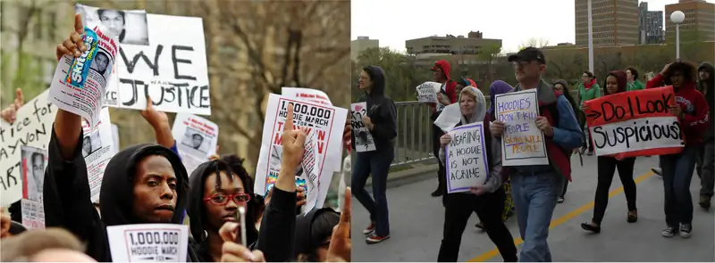
On the night of February 26, 2012, Trayvon Martin, a 17-year-old African American high school student, was shot by a neighborhood watch volunteer, George Zimmerman, in a predominantly White neighborhood. Zimmerman observed the boy dressed in a hoodie and pursued Martin. Zimmerman called the police to report a person acting suspiciously, which he had done on other occasions. According to the 911 call transcript, Zimmerman said on the call, "[expletive] punks. These [expletive], they always get away." The 911 operator told Zimmerman not to follow the teen, as was also stated in the police neighborhood watch guidelines that had been provided to Zimmerman. A physical altercation ended with Zimmerman fatally shooting Martin. Zimmerman claimed that he acted in self-defense. Martin was unarmed, and after his death, there was a nationwide outcry. A Florida jury found Zimmerman not guilty of second degree murder nor of manslaughter.
There have also been tragic situations with deadly consequences in which police officers have shot innocent civilians. In 2019, Atatiana Jefferson's neighbor used a non-emergency line to call the police because Jefferson's front door was open in the late hours of the night. The police arrived and an officer went to the back of the yard. Jefferson, not knowing that the police had been called, reached into her purse and got out her legally owned gun. The officer perceived a threat and fired upon Jefferson, killing her. Her 8-year-old nephew witnessed the incident, as he was playing video games with his aunt. Why did each of these nights end so tragically for those involved? What dynamics contributed to the outcomes? How can these deaths be prevented?
Social psychologists examine how the presence of others impacts how a person behaves and reacts, whether that person is an athlete playing a game, a police officer on the job, or a worshiper attending a religious service. Social psychologists believe that a person's behavior is influenced by who else is present in a given situation and the composition of social groups.
12.1 What Is Social Psychology?¶
Learning Objectives
By the end of this section, you will be able to:
- Define social psychology
- Describe situational versus dispositional influences on behavior
- Describe the fundamental attribution error
- Explain actor-observer bias
- Describe self-serving bias
- Explain the just-world hypothesis
Social psychology examines how people affect one another, and it looks at the power of the situation. According to the American Psychological Association (n.d.), social psychologists "are interested in all aspects of personality and social interaction, exploring the influence of interpersonal and group relationships on human behavior." Throughout this chapter, we will examine how the presence of other individuals and groups of people impacts a person's behaviors, thoughts, and feelings. Essentially, people will change their behavior to align with the social situation at hand. If we are in a new situation or are unsure how to behave, we will take our cues from other individuals.
The field of social psychology studies topics at both the intra- and interpersonal levels. Intrapersonal topics (those that pertain to the individual) include emotions and attitudes, the self, and social cognition (the ways in which we think about ourselves and others). Interpersonal topics (those that pertain to dyads and groups) include helping behavior (Figure 12.2), aggression, prejudice and discrimination, attraction and close relationships, and group processes and intergroup relationships.
Social psychologists focus on how people conceptualize and interpret situations and how these interpretations influence their thoughts, feelings, and behaviors (Ross & Nisbett, 1991). Thus, social psychology studies individuals in a social context and how situational variables interact to influence behavior. In this chapter, we discuss the intrapersonal processes of self-presentation, cognitive dissonance and attitude change, and the interpersonal processes of conformity and obedience, aggression and altruism, and, finally, love and attraction.
Situational and Dispositional Influences on Behavior¶
Behavior is a product of both the situation (e.g., cultural influences, social roles, and the presence of bystanders) and of the person (e.g., personality characteristics). Subfields of psychology tend to focus on one influence or behavior over others. Situationism is the view that our behavior and actions are determined by our immediate environment and surroundings. In contrast, dispositionism holds that our behavior is determined by internal factors (Heider, 1958). An internal factor is an attribute of a person and includes personality traits and temperament. Social psychologists have tended to take the situationist perspective, whereas personality psychologists have promoted the dispositionist perspective. Modern approaches to social psychology, however, take both the situation and the individual into account when studying human behavior (Fiske, Gilbert, & Lindzey, 2010). In fact, the field of social-personality psychology has emerged to study the complex interaction of internal and situational factors that affect human behavior (Mischel, 1977; Richard, Bond, & Stokes-Zoota, 2003).
Fundamental Attribution Error¶
In the United States, the predominant culture tends to favor a dispositional approach in explaining human behavior. Why do you think this is? We tend to think that people are in control of their own behaviors, and, therefore, any behavior change must be due to something internal, such as their personality, habits, or temperament. According to some social psychologists, people tend to overemphasize internal factors as explanations—or attributions—for the behavior of other people. They tend to assume that the behavior of another person is a trait of that person, and to underestimate the power of the situation on the behavior of others. They tend to fail to recognize when the behavior of another is due to situational variables, and thus to the person’s state. This erroneous assumption is called the fundamental attribution error (Ross, 1977; Riggio & Garcia, 2009). To better understand, imagine this scenario: Jamie returns home from work, and opens the front door to a happy greeting from spouse Morgan who inquires how the day has been. Instead of returning the spouse’s kind greeting, Jamie yells, “Leave me alone!” Why did Jamie yell? How would someone committing the fundamental attribution error explain Jamie’s behavior? The most common response is that Jamie is a mean, angry, or unfriendly person (traits). This is an internal or dispositional explanation. However, imagine that Jamie was just laid off from work due to company downsizing. Would your explanation for Jamie’s behavior change? Your revised explanation might be that Jamie was frustrated and disappointed about being laid off and was therefore in a bad mood (state). This is now an external or situational explanation for Jamie’s behavior.
The fundamental attribution error is so powerful that people often overlook obvious situational influences on behavior. A classic example was demonstrated in a series of experiments known as the quizmaster study (Ross, Amabile, & Steinmetz, 1977). Student participants were randomly assigned to play the role of a questioner (the quizmaster) or a contestant in a quiz game. Questioners developed difficult questions to which they knew the answers, and they presented these questions to the contestants. The contestants answered the questions correctly only 4 out of 10 times (Figure 12.3). After the task, the questioners and contestants were asked to rate their own general knowledge compared to the average student. Questioners did not rate their general knowledge higher than the contestants, but the contestants rated the questioners’ intelligence higher than their own. In a second study, observers of the interaction also rated the questioner as having more general knowledge than the contestant. The obvious influence on performance is the situation. The questioners wrote the questions, so of course they had an advantage. Both the contestants and observers made an internal attribution for the performance. They concluded that the questioners must be more intelligent than the contestants.
The halo effect refers to the tendency to let the overall impression of an individual color the way in which we feel about their character. For instance, we might assume that people who are physically attractive are more likely to be good people than less attractive individuals. Another example of how the halo effect might manifest would involve assuming that someone whom we perceive to be outgoing or friendly has a better moral character than someone who is not.
As demonstrated in the examples above, the fundamental attribution error is considered a powerful influence in how we explain the behaviors of others. However, it should be noted that some researchers have suggested that the fundamental attribution error may not be as powerful as it is often portrayed. In fact, a recent review of more than 173 published studies suggests that several factors (e.g., high levels of idiosyncrasy of the character and how well hypothetical events are explained) play a role in determining just how influential the fundamental attribution error is (Malle, 2006).
Is the Fundamental Attribution Error a Universal Phenomenon?¶
You may be able to think of examples of the fundamental attribution error in your life. Do people in all cultures commit the fundamental attribution error? Research suggests that they do not. People from an individualistic culture, that is, a culture that focuses on individual achievement and autonomy, have the greatest tendency to commit the fundamental attribution error. Individualistic cultures, which tend to be found in western countries such as the United States, Canada, and the United Kingdom, promote a focus on the individual. Therefore, a person’s disposition is thought to be the primary explanation for her behavior. In contrast, people from a collectivistic culture, that is, a culture that focuses on communal relationships with others, such as family, friends, and community (Figure 12.4), are less likely to commit the fundamental attribution error (Markus & Kitayama, 1991; Triandis, 2001).
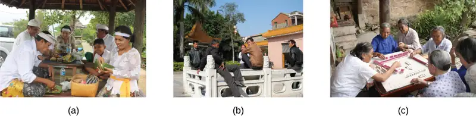
Why do you think this is the case? Collectivistic cultures, which tend to be found in east Asian countries and in Latin American and African countries, focus on the group more than on the individual (Nisbett, Peng, Choi, & Norenzayan, 2001). This focus on others provides a broader perspective that takes into account both situational and cultural influences on behavior; thus, a more nuanced explanation of the causes of others’ behavior becomes more likely. Table 12.1 compares individualistic and collectivist cultures.
Table 12.1
| Characteristics of Individualistic and Collectivistic Cultures | |
|---|---|
| Individualistic Culture | Collectivistic Culture |
| Achievement oriented | Relationship oriented |
| Focus on autonomy | Focus on group harmony |
| Dispositional perspective | Situational perspective |
| Independent | Interdependent |
| Analytic thinking style | Holistic thinking style |
Masuda and Nisbett (2001) demonstrated that the kinds of information that people attend to when viewing visual stimuli (e.g., an aquarium scene) can differ significantly depending on whether the observer comes from a collectivistic versus an individualistic culture. Japanese participants were much more likely to recognize objects that were presented when they occurred in the same context in which they were originally viewed. Manipulating the context in which object recall occurred had no such impact on American participants. Other researchers have shown similar differences across cultures. For example, Zhang, Fung, Stanley, Isaacowitz, and Zhang (2014) demonstrated differences in the ways that holistic thinking might develop between Chinese and American participants, and Ramesh and Gelfand (2010) demonstrated that job turnover rates are more related to the fit between a person and the organization in which they work in an Indian sample, but the fit between the person and their specific job was more predictive of turnover in an American sample.
Actor-Observer Bias¶
Returning to our earlier example, Jamie was laid off, but an observer would not know. So a naïve observer would tend to attribute Jamie’s hostile behavior to Jamie’s disposition rather than to the true, situational cause. Why do you think we underestimate the influence of the situation on the behaviors of others? One reason is that we often don’t have all the information we need to make a situational explanation for another person’s behavior. The only information we might have is what is observable. Due to this lack of information we have a tendency to assume the behavior is due to a dispositional, or internal, factor. When it comes to explaining our own behaviors, however, we have much more information available to us. If you came home from school or work angry and yelled at your dog or a loved one, what would your explanation be? You might say you were very tired or feeling unwell and needed quiet time—a situational explanation. The actor-observer bias is the phenomenon of attributing other people’s behavior to internal factors (fundamental attribution error) while attributing our own behavior to situational forces (Jones & Nisbett, 1971; Nisbett, Caputo, Legant, & Marecek, 1973; Choi & Nisbett, 1998). As actors of behavior, we have more information available to explain our own behavior. However as observers, we have less information available; therefore, we tend to default to a dispositionist perspective.
One study on the actor-observer bias investigated reasons male participants gave for why they liked their girlfriend (Nisbett et al., 1973). When asked why participants liked their own girlfriend, participants focused on internal, dispositional qualities of their girlfriends (for example, her pleasant personality). The participants’ explanations rarely included causes internal to themselves, such as dispositional traits (for example, “I need companionship.”). In contrast, when speculating why a male friend likes his girlfriend, participants were equally likely to give dispositional and external explanations. This supports the idea that actors tend to provide few internal explanations but many situational explanations for their own behavior. In contrast, observers tend to provide more dispositional explanations for a friend’s behavior (Figure 12.5).
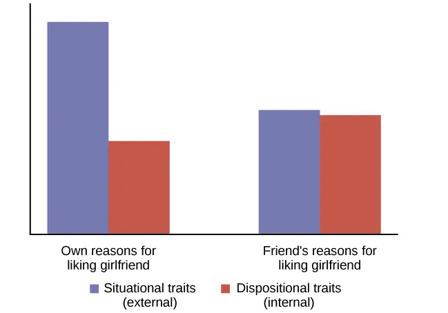
Self-Serving Bias¶
We can understand self-serving bias by digging more deeply into attribution, a belief about the cause of a result. One model of attribution proposes three main dimensions: locus of control (internal versus external), stability (stable versus unstable), and controllability (controllable versus uncontrollable). In this context, stability refers to the extent in which the circumstances that result in a given outcome are changeable. The circumstances are considered stable if they are unlikely to change. Controllability refers to the extent to which the circumstances that are associated with a given outcome can be controlled. Obviously, those things that we have the power to control would be labeled controllable (Weiner, 1979).
Following an outcome, self-serving biases are those attributions that enable us to see ourselves in a favorable light (for example, making internal attributions for success and external attributions for failures). When you do well at a task, for example acing an exam, it is in your best interest to make a dispositional attribution for your behavior (“I’m smart,”) instead of a situational one (“The exam was easy,”). Self-serving bias is the tendency to explain our successes as due to dispositional (internal) characteristics, but to explain our failures as due to situational (external) factors. Again, this is culture dependent. This bias serves to protect self-esteem. You can imagine that if people always made situational attributions for their behavior, they would never be able to take credit and feel good about their accomplishments.
Consider the example of how we explain our favorite sports team’s wins. Research shows that we make internal, stable, and controllable attributions for our team’s victory (Figure 12.6) (Grove, Hanrahan, & McInman, 1991). For example, we might tell ourselves that our team is talented (internal), consistently works hard (stable), and uses effective strategies (controllable). In contrast, we are more likely to make external, unstable, and uncontrollable attributions when our favorite team loses. For example, we might tell ourselves that the other team has more experienced players or that the referees were unfair (external), the other team played at home (unstable), and the cold weather affected our team’s performance (uncontrollable).
Just-World Hypothesis¶
One consequence of westerners’ tendency to provide dispositional explanations for behavior is victim blame (Jost & Major, 2001). When people experience bad fortune, others tend to assume that they somehow are responsible for their own fate. A common ideology, or worldview, in the United States is the just-world hypothesis. The just-world hypothesis is the belief that people get the outcomes they deserve (Lerner & Miller, 1978). In order to maintain the belief that the world is a fair place, people tend to think that good people experience positive outcomes, and bad people experience negative outcomes (Jost, Banaji, & Nosek, 2004; Jost & Major, 2001). The ability to think of the world as a fair place, where people get what they deserve, allows us to feel that the world is predictable and that we have some control over our life outcomes (Jost et al., 2004; Jost & Major, 2001). For example, if you want to experience positive outcomes, you just need to work hard to get ahead in life.
Can you think of a negative consequence of the just-world hypothesis? One negative consequence is people’s tendency to blame poor individuals for their plight. What common explanations are given for why people live in poverty? Have you heard statements such as, “The poor are lazy and just don’t want to work” or “Poor people just want to live off the government”? What types of explanations are these, dispositional or situational? These dispositional explanations are clear examples of the fundamental attribution error. Blaming poor people for their poverty ignores situational factors that impact them, such as high unemployment rates, recession, poor educational opportunities, and the familial cycle of poverty (Figure 12.7). Other research shows that people who hold just-world beliefs have negative attitudes toward people who are unemployed and people living with AIDS (Sutton & Douglas, 2005). In the United States and other countries, victims of sexual assault may find themselves blamed for their abuse. Victim advocacy groups, such as Domestic Violence Ended (DOVE), attend court in support of victims to ensure that blame is directed at the perpetrators of sexual violence, not the victims.
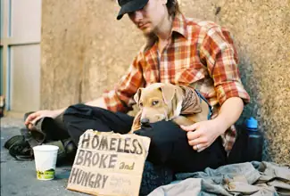
12.2 Self-presentation¶
Learning Objectives
By the end of this section, you will be able to:
- Describe social roles and how they influence behavior
- Explain what social norms are and how they influence behavior
- Define script
- Describe the findings and criticisms of Zimbardo’s Stanford prison experiment
As you’ve learned, social psychology is the study of how people affect one another’s thoughts, feelings, and behaviors. We have discussed situational perspectives and social psychology’s emphasis on the ways in which a person’s environment, including culture and other social influences, affect behavior. In this section, we examine situational forces that have a strong influence on human behavior including social roles, social norms, and scripts. We discuss how humans use the social environment as a source of information, or cues, on how to behave. Situational influences on our behavior have important consequences, such as whether we will help a stranger in an emergency or how we would behave in an unfamiliar environment.
Social Roles¶
One major social determinant of human behavior is our social roles. A social role is a pattern of behavior that is expected of a person in a given setting or group (Hare, 2003). Each one of us has several social roles. You may be, at the same time, a student, a parent, an aspiring teacher, a son or daughter, a spouse, and a lifeguard. How do these social roles influence your behavior? Social roles are defined by culturally shared knowledge. That is, nearly everyone in a given culture knows what behavior is expected of a person in a given role. For example, what is the social role for a student? If you look around a college classroom you will likely see students engaging in studious behavior, taking notes, listening to the professor, reading the textbook, and sitting quietly at their desks (Figure 12.8). Of course you may see students deviating from the expected studious behavior such as texting on their phones or using Facebook on their laptops, but in all cases, the students that you observe are attending class—a part of the social role of students.
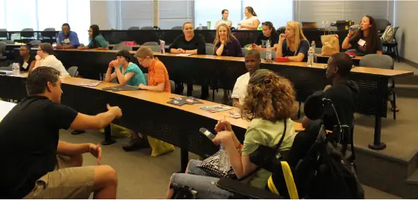
Social roles, and our related behavior, can vary across different settings. How do you behave when you are engaging in the role of a child attending a family function? Now imagine how you behave when you are engaged in the role of employee at your workplace. It is very likely that your behavior will be different. Perhaps you are more relaxed and outgoing with your family, making jokes and doing silly things. But at your workplace you might speak more professionally, and although you may be friendly, you are also serious and focused on getting the work completed. These are examples of how our social roles influence and often dictate our behavior to the extent that identity and personality can vary with context (that is, in different social groups) (Malloy, Albright, Kenny, Agatstein & Winquist, 1997).
Social Norms¶
As discussed previously, social roles are defined by a culture’s shared knowledge of what is expected behavior of an individual in a specific role. This shared knowledge comes from social norms. A social norm is a group’s expectation of what is appropriate and acceptable behavior for its members—how they are supposed to behave and think (Deutsch & Gerard, 1955; Berkowitz, 2004). How are we expected to act? What are we expected to talk about? What are we expected to wear? In our discussion of social roles we noted that colleges have social norms for students’ behavior in the role of student and workplaces have social norms for employees’ behaviors in the role of employee. Social norms are everywhere including in families, gangs, and on social media outlets. What are some social norms on Instagram?
Connect the Concepts: Tweens, Teens, and Social Norms
My 11-year-old daughter, Janelle, recently told me she needed shorts and shirts for the summer, and that she wanted me to take her to a store at the mall that is popular with preteens and teens to buy them. I have noticed that many girls have clothes from that store, so I tried teasing her. I said, “All the shirts say ‘Aero’ on the front. If you are wearing a shirt like that and you have a substitute teacher, and the other girls are all wearing that type of shirt, won’t the substitute teacher think you are all named ‘Aero’?”
My daughter replied, in typical 11-year-old fashion, “Mom, you are not funny. Can we please go shopping?”
I tried a different tactic. I asked Janelle if having clothing from that particular store will make her popular. She replied, “No, it will not make me popular. It is what the popular kids wear. It will make me feel happier.” How can a label or name brand make someone feel happier? Think back to what you’ve learned about lifespan development. What is it about pre-teens and young teens that make them want to fit in (Figure 12.9)? Does this change over time? Think back to your high school experience, or look around your college campus. What is the main name brand clothing you see? What messages do we get from the media about how to fit in?
Scripts¶
Because of social roles, people tend to know what behavior is expected of them in specific, familiar settings. A script is a person’s knowledge about the sequence of events expected in a specific setting (Schank & Abelson, 1977). How do you act on the first day of school, when you walk into an elevator, or are at a restaurant? For example, at a restaurant in the United States, if we want the server’s attention, we try to make eye contact. In Brazil, you would make the sound “psst” to get the server’s attention. You can see the cultural differences in scripts. To an American, saying “psst” to a server might seem rude, yet to a Brazilian, trying to make eye contact might not seem an effective strategy. Scripts are important sources of information to guide behavior in given situations. Can you imagine being in an unfamiliar situation and not having a script for how to behave? This could be uncomfortable and confusing. How could you find out about social norms in an unfamiliar culture?
Zimbardo’s Stanford Prison Experiment¶
The famous Stanford prison experiment, conducted by social psychologist Philip Zimbardo and his colleagues at Stanford University, demonstrated the power of social roles, social norms, and scripts. In the summer of 1971, an advertisement was placed in a California newspaper asking for male volunteers to participate in a study about the psychological effects of prison life. More than 70 men volunteered, and these volunteers then underwent psychological testing to eliminate candidates who had underlying psychiatric issues, medical issues, or a history of crime or drug abuse. The pool of volunteers was whittled down to 24 healthy male college students. Each student was paid $15 per day (equivalent to about $80 today) and was randomly assigned to play the role of either a prisoner or a guard in the study. Based on what you have learned about research methods, why is it important that participants were randomly assigned?
A mock prison was constructed in the basement of the psychology building at Stanford. Participants assigned to play the role of prisoners were “arrested” at their homes by Palo Alto police officers, booked at a police station, and subsequently taken to the mock prison. The experiment was scheduled to run for several weeks. To the surprise of the researchers, both the “prisoners” and “guards” assumed their roles with zeal. On the second day of the experiment, the guards forced the prisoners to strip, took their beds, and isolated the ringleaders using solitary confinement. In a relatively short time, the guards came to harass the prisoners in an increasingly sadistic manner, through a complete lack of privacy, lack of basic comforts such as mattresses to sleep on, and through degrading chores and late-night counts.
The prisoners, in turn, began to show signs of severe anxiety and hopelessness—they began tolerating the guards’ abuse. Even the Stanford professor who designed the study and was the head researcher, Philip Zimbardo, found himself acting as if the prison was real and his role, as prison supervisor, was real as well. After only six days, the experiment had to be ended due to the participants’ deteriorating behavior. Zimbardo explained,
At this point it became clear that we had to end the study. We had created an overwhelmingly powerful situation—a situation in which prisoners were withdrawing and behaving in pathological ways, and in which some of the guards were behaving sadistically. Even the “good” guards felt helpless to intervene, and none of the guards quit while the study was in progress. Indeed, it should be noted that no guard ever came late for his shift, called in sick, left early, or demanded extra pay for overtime work. (Zimbardo, 2013)
The Stanford Prison Experiment has been used as a memorable demonstration of the incredible power that social roles, norms, and scripts have in affecting human behavior. However, multiple aspects of the study have been subject to criticism since its inception. The nature of these criticisms range from ethical concerns to issues of generalizability (Bartels, Milovich, & Moussier, 2016; Griggs, 2014; Le Texier, 2019). One criticism is that the way students were recruited for the experiment may have impacted the outcome (Carnahan & McFarland, 2007). Another criticism questions the conclusions that can be drawn from the study. Zimbardo appears to have provided specific guidelines of the types of behaviors that were expected of the guards (Zimbardo, 2007). Subsequent research suggests that such guidelines likely created an expectation of the types of behavior that Zimbardo reported observing in the Stanford Prison Experiment (Bartels, 2019), and that given these expectations, the guards simply acted as they thought they were expected to act. It has also been problematic that attempts to replicate aspects of the study have not been successful. For example, when no guidelines were presented to the guards, researchers documented different outcomes than those observed by Zimbardo. (Reicher & Haslam, 2006).
The Stanford Prison Experiment has some parallels with the abuse of prisoners of war by U.S. Army troops and CIA personnel at the Abu Ghraib prison in 2003 and 2004 during the Iraq War. The offenses at Abu Ghraib were documented by photographs of the abuse, some taken by the abusers themselves (Figure 12.10).
Link to Learning
Listen to this NPR interview with Philip Zimbardo where he discusses the parallels between the Stanford prison experiment and the Abu Ghraib prison in Iraq to learn more.
12.3 Attitudes and Persuasion¶
Learning Objectives
By the end of this section, you will be able to:
- Define attitude
- Describe how people’s attitudes are internally changed through cognitive dissonance
- Explain how people’s attitudes are externally changed through persuasion
- Describe the peripheral and central routes to persuasion
Social psychologists have documented how the power of the situation can influence our behaviors. Now we turn to how the power of the situation can influence our attitudes and beliefs. Attitude is our evaluation of a person, an idea, or an object. We have attitudes for many things ranging from products that we might pick up in the supermarket to people around the world to political policies. Typically, attitudes are favorable or unfavorable: positive or negative (Eagly & Chaiken, 1993). And, they have three components: an affective component (feelings), a behavioral component (the effect of the attitude on behavior), and a cognitive component (belief and knowledge) (Rosenberg & Hovland, 1960).
For example, you may hold a positive attitude toward recycling. This attitude should result in positive feelings toward recycling (such as “It makes me feel good to recycle” or “I enjoy knowing that I make a small difference in reducing the amount of waste that ends up in landfills”). Certainly, this attitude should be reflected in our behavior: You actually recycle as often as you can. Finally, this attitude will be reflected in favorable thoughts (for example, “Recycling is good for the environment” or “Recycling is the responsible thing to do”).
Our attitudes and beliefs are not only influenced by external forces, but also by internal influences that we control. Like our behavior, our attitudes and thoughts are not always changed by situational pressures, but they can be consciously changed by our own free will. In this section we discuss the conditions under which we would want to change our own attitudes and beliefs.
What is Cognitive Dissonance?¶
Social psychologists have documented that feeling good about ourselves and maintaining positive self-esteem is a powerful motivator of human behavior (Tavris & Aronson, 2008). In the United States, members of the predominant culture typically think very highly of themselves and view themselves as good people who are above average on many desirable traits (Ehrlinger, Gilovich, & Ross, 2005). Often, our behavior, attitudes, and beliefs are affected when we experience a threat to our self-esteem or positive self-image. Psychologist Leon Festinger (1957) defined cognitive dissonance as psychological discomfort arising from holding two or more inconsistent attitudes, behaviors, or cognitions (thoughts, beliefs, or opinions). Festinger’s theory of cognitive dissonance states that when we experience a conflict in our behaviors, attitudes, or beliefs that runs counter to our positive self-perceptions, we experience psychological discomfort (dissonance). For example, if you believe smoking is bad for your health but you continue to smoke, you experience conflict between your belief and behavior (Figure 12.11).
![A diagram shows the process of cognitive dissonance. Two disparate statements (“I am a smoker” and “Smoking is bad for your health”) are joined as an example of cognitive dissonance. A flow diagram joins them in a process labeled, “Remove dissonance tension,” with two resulting flows. The first flow path shows the warning on a pack of cigarettes with a checkmark imposed over the image that is labeled, “Smoking is bad for your health.” The path then shows a photograph of an arm with a nicotine patch that is labeled, “I quit smoking.” The second flow path shows the warning on a pack of cigarettes with an X imposed over the image and is labeled, “Research is inconclusive,” then shows a photograph of a person smoking labeled, “I am still a smoker.”](img/cnx-psych-12-03-dissonance.webp)
Later research documented that only conflicting cognitions that threaten individuals’ positive self-image cause dissonance (Greenwald & Ronis, 1978). Additional research found that dissonance is not only psychologically uncomfortable but also can cause physiological arousal (Croyle & Cooper, 1983) and activate regions of the brain important in emotions and cognitive functioning (van Veen, Krug, Schooler, & Carter, 2009). When we experience cognitive dissonance, we are motivated to decrease it because it is psychologically, physically, and mentally uncomfortable. We can reduce cognitive dissonance by bringing our cognitions, attitudes, and behaviors in line—that is, making them harmonious. This can be done in different ways, such as:
- changing our discrepant behavior (e.g., stop smoking),
- changing our cognitions through rationalization or denial (e.g., telling ourselves that health risks can be reduced by smoking filtered cigarettes),
- adding a new cognition (e.g., “Smoking suppresses my appetite so I don’t become overweight, which is good for my health.”).
A classic example of cognitive dissonance is Joaquin, a 20-year-old who enlists in the military. During boot camp he is awakened at 5:00 a.m., is chronically sleep deprived, yelled at, covered in sand flea bites, physically bruised and battered, and mentally exhausted (Figure 12.12). It gets worse. Recruits that make it to week 11 of boot camp have to do 54 hours of continuous training.
Not surprisingly, Joaquin is miserable. No one likes to be miserable. In this type of situation, people can change their beliefs, their attitudes, or their behaviors. The last option, a change of behaviors, is not available to Joaquin. He has signed on to the military for four years, and he cannot legally leave.
If Joaquin keeps thinking about how miserable he is, it is going to be a very long four years. He will be in a constant state of cognitive dissonance. As an alternative to this misery, Joaquin can change his beliefs or attitudes. He can tell himself, “I am becoming stronger, healthier, and sharper. I am learning discipline and how to defend myself and my country. What I am doing is really important.” If this is his belief, he will realize that he is becoming stronger through his challenges. He then will feel better and not experience cognitive dissonance, which is an uncomfortable state.
The Effect of Initiation¶
The military example demonstrates the observation that a difficult initiation into a group influences us to like the group more. Another social psychology concept, justification of effort, suggests that we value goals and achievements that we put a lot of effort into. According to this theory, if something is difficult for us to achieve, we believe it is more worthwhile. For example, if you move to an apartment and spend hours assembling a dresser you bought from Ikea, you will value that more than a fancier dresser someone else bought you. We do not want to have wasted time and effort to join a group that we eventually leave. A classic experiment by Aronson and Mills (1959) demonstrated this justification of effort effect. College students volunteered to join a campus group that would meet regularly to discuss the psychology of sex. Participants were randomly assigned to one of three conditions: no initiation, an easy initiation, and a difficult initiation into the group. After participating in the first discussion, which was deliberately made very boring, participants rated how much they liked the group. Participants who underwent a difficult initiation process to join the group rated the group more favorably than did participants with an easy initiation or no initiation (Figure 12.13).
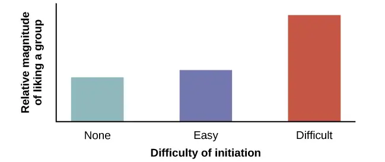
Similar effects can be seen in a more recent study of how student effort affects course evaluations. Heckert, Latier, Ringwald-Burton, and Drazen (2006) surveyed 463 undergraduates enrolled in courses at a midwestern university about the amount of effort that their courses required of them. In addition, the students were also asked to evaluate various aspects of the course. Given what you’ve just read, it will come as no surprise that those courses that were associated with the highest level of effort were evaluated as being more valuable than those that were not. Furthermore, students indicated that they learned more in courses that required more effort, regardless of the grades that they received in those courses (Heckert et al., 2006).
Besides the classic military example and group initiation, can you think of other examples of cognitive dissonance? Here is one: Maria and Marco live in Fairfield County, Connecticut, which is one of the wealthiest areas in the United States and has a very high cost of living. Maria telecommutes from home and Marco does not work outside of the home. They rent a very small house for more than $3000 a month. Marco shops at consignment stores for clothes and economizes when possible. They complain that they never have any money and that they cannot buy anything new. When asked why they do not move to a less expensive location, since Maria telecommutes, they respond that Fairfield County is beautiful, they love the beaches, and they feel comfortable there. How does the theory of cognitive dissonance apply to Maria and Marco’s choices?
Persuasion¶
In the previous section we discussed that the motivation to reduce cognitive dissonance leads us to change our attitudes, behaviors, and/or cognitions to make them consonant. Persuasion is the process of changing our attitude toward something based on some kind of communication. Much of the persuasion we experience comes from outside forces. How do people convince others to change their attitudes, beliefs, and behaviors (Figure 12.14)? What communications do you receive that attempt to persuade you to change your attitudes, beliefs, and behaviors?
A subfield of social psychology studies persuasion and social influence, providing us with a plethora of information on how humans can be persuaded by others.
Yale Attitude Change Approach¶
The topic of persuasion has been one of the most extensively researched areas in social psychology (Fiske et al., 2010). During the Second World War, Carl Hovland extensively researched persuasion for the U.S. Army. After the war, Hovland continued his exploration of persuasion at Yale University. Out of this work came a model called the Yale attitude change approach, which describes the conditions under which people tend to change their attitudes. Hovland demonstrated that certain features of the source of a persuasive message, the content of the message, and the characteristics of the audience will influence the persuasiveness of a message (Hovland, Janis, & Kelley, 1953).
Features of the source of the persuasive message include the credibility of the speaker (Hovland & Weiss, 1951) and the physical attractiveness of the speaker (Eagly & Chaiken, 1975; Petty, Wegener, & Fabrigar, 1997). Thus, speakers who are credible, or have expertise on the topic, and who are deemed as trustworthy are more persuasive than less credible speakers. Similarly, more attractive speakers are more persuasive than less attractive speakers. The use of famous actors and athletes to advertise products on television and in print relies on this principle. The immediate and long term impact of the persuasion also depends, however, on the credibility of the messenger (Kumkale & Albarracín, 2004).
Features of the message itself that affect persuasion include subtlety (the quality of being important, but not obvious) (Petty & Cacioppo, 1986; Walster & Festinger, 1962); sidedness (that is, having more than one side) (Crowley & Hoyer, 1994; Igou & Bless, 2003; Lumsdaine & Janis, 1953); timing (Haugtvedt & Wegener, 1994; Miller & Campbell, 1959), and whether both sides are presented. Messages that are more subtle are more persuasive than direct messages. Arguments that occur first, such as in a debate, are more influential if messages are given back-to-back. However, if there is a delay after the first message, and before the audience needs to make a decision, the last message presented will tend to be more persuasive (Miller & Campbell, 1959).
Features of the audience that affect persuasion are attention (Albarracín & Wyer, 2001; Festinger & Maccoby, 1964), intelligence, self-esteem (Rhodes & Wood, 1992), and age (Krosnick & Alwin, 1989). In order to be persuaded, audience members must be paying attention. People with lower intelligence are more easily persuaded than people with higher intelligence; whereas people with moderate self-esteem are more easily persuaded than people with higher or lower self-esteem (Rhodes & Wood, 1992). Finally, younger adults aged 18–25 are more persuadable than older adults.
Elaboration Likelihood Model¶
An especially popular model that describes the dynamics of persuasion is the elaboration likelihood model of persuasion (Petty & Cacioppo, 1986). The elaboration likelihood model considers the variables of the attitude change approach—that is, features of the source of the persuasive message, contents of the message, and characteristics of the audience are used to determine when attitude change will occur. According to the elaboration likelihood model of persuasion, there are two main routes that play a role in delivering a persuasive message: central and peripheral (Figure 12.15).
![A diagram shows two routes of persuasion. A box on the left is labeled “persuasive message” and arrows from the box separate into two routes: the central and peripheral routes, each with boxes describing the characteristics of the audience, processing, and persuasion. The audience is “motivated, analytical” in the central route, and “not motivated, not analytical” in the peripheral route. Processing in the central route is “high effort; evaluate message” and in the peripheral route is “low effort; persuaded by cues outside of message.” Persuasion in the central route is “lasting change in attitude” and in the peripheral route is “temporary change in attitude.”](img/cnx-psych-12-03-persuasion2.webp)
The central route is logic driven and uses data and facts to convince people of an argument’s worthiness. For example, a car company seeking to persuade you to purchase their model will emphasize the car’s safety features and fuel economy. This is a direct route to persuasion that focuses on the quality of the information. In order for the central route of persuasion to be effective in changing attitudes, thoughts, and behaviors, the argument must be strong and, if successful, will result in lasting attitude change.
The central route to persuasion works best when the target of persuasion, or the audience, is analytical and willing to engage in processing of the information. From an advertiser’s perspective, what products would be best sold using the central route to persuasion? What audience would most likely be influenced to buy the product? One example is buying a computer. It is likely, for example, that small business owners might be especially influenced by the focus on the computer’s quality and features such as processing speed and memory capacity.
The peripheral route is an indirect route that uses peripheral cues to associate positivity with the message (Petty & Cacioppo, 1986). Instead of focusing on the facts and a product’s quality, the peripheral route relies on association with positive characteristics such as positive emotions and celebrity endorsement. For example, having a popular athlete advertise athletic shoes is a common method used to encourage young adults to purchase the shoes. This route to attitude change does not require much effort or information processing. This method of persuasion may promote positivity toward the message or product, but it typically results in less permanent attitude or behavior change. The audience does not need to be analytical or motivated to process the message. In fact, a peripheral route to persuasion may not even be noticed by the audience, for example in the strategy of product placement. Product placement refers to putting a product with a clear brand name or brand identity in a TV show or movie to promote the product (Gupta & Lord, 1998). For example, one season of the reality series American Idol prominently showed the panel of judges drinking out of cups that displayed the Coca-Cola logo. What other products would be best sold using the peripheral route to persuasion? Another example is clothing: A retailer may focus on celebrities that are wearing the same style of clothing.
Foot-in-the-door Technique¶
Researchers have tested many persuasion strategies that are effective in selling products and changing people’s attitude, ideas, and behaviors. One effective strategy is the foot-in-the-door technique (Cialdini, 2001; Pliner, Hart, Kohl, & Saari, 1974). Using the foot-in-the-door technique, the persuader gets a person to agree to bestow a small favor or to buy a small item, only to later request a larger favor or purchase of a bigger item. The foot-in-the-door technique was demonstrated in a study by Freedman and Fraser (1966) in which participants who agreed to post a small sign in their yard or sign a petition were more likely to agree to put a large sign in their yard than people who did not first receive the small request (Figure 12.16). Research on this technique also illustrates the principle of consistency (Cialdini, 2001): Our past behavior often directs our future behavior, and we have a desire to maintain consistency once we have committed to a behavior.
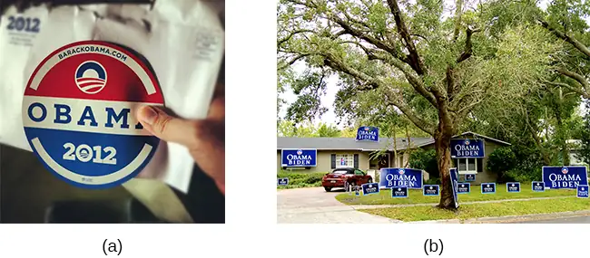
A common application of foot-in-the-door is when teens ask their parents for a small permission (for example, extending curfew by a half hour) and then asking them for something larger. Having granted the smaller request increases the likelihood that parents will acquiesce to the later, larger request.
How would a store owner use the foot-in-the-door technique to sell you an expensive product? For example, say that you are buying the latest model smartphone, and the salesperson suggests you purchase the best data plan. You agree to this. The salesperson then suggests a bigger purchase—the three-year extended warranty. After agreeing to the smaller request, you are more likely to also agree to the larger request. You may have encountered this if you have bought a car. When salespeople realize that a buyer intends to purchase a certain model, they might try to get the customer to pay for many or most available options on the car. Another example of the foot-in-the-door technique would be applied to an individual in the market for a used car who decides to buy a fully loaded new car. Why? Because the salesperson convinced the buyer that they need a car that has all of the safety features that were not available in the used car.
12.4 Conformity, Compliance, and Obedience¶
Learning Objectives
By the end of this section, you will be able to:
- Explain the Asch effect
- Define conformity and types of social influence
- Describe Stanley Milgram’s experiment and its implications
- Define groupthink, social facilitation, and social loafing
In this section, we discuss additional ways in which people influence others. The topics of conformity, social influence, obedience, and group processes demonstrate the power of the social situation to change our thoughts, feelings, and behaviors. We begin this section with a discussion of a famous social psychology experiment that demonstrated how susceptible humans are to outside social pressures.
Conformity¶
Solomon Asch conducted several experiments in the 1950s to determine how people are affected by the thoughts and behaviors of other people. In one study, a group of participants was shown a series of printed line segments of different lengths: a, b, and c (Figure 12.17). Participants were then shown a fourth line segment: x. They were asked to identify which line segment from the first group (a, b, or c) most closely resembled the fourth line segment in length.
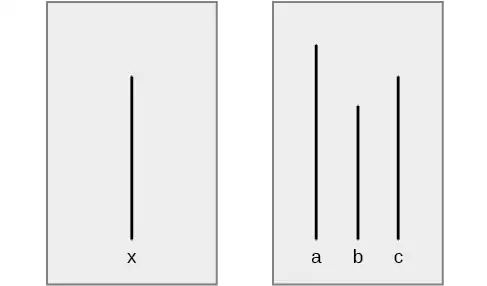
Each group of participants had only one true, naïve subject. The remaining members of the group were confederates of the researcher. A confederate is a person who is aware of the experiment and works for the researcher. Confederates are used to manipulate social situations as part of the research design, and the true, naïve participants believe that confederates are, like them, uninformed participants in the experiment. In Asch’s study, the confederates identified a line segment that was obviously shorter than the target line—a wrong answer. The naïve participant then had to identify aloud the line segment that best matched the target line segment.
How often do you think the true participant aligned with the confederates’ response? That is, how often do you think the group influenced the participant, and the participant gave the wrong answer? Asch (1955) found that 76% of participants conformed to group pressure at least once by indicating the incorrect line. Conformity is the change in a person’s behavior to go along with the group, even if he does not agree with the group. Why would people give the wrong answer? What factors would increase or decrease someone giving in or conforming to group pressure?
The Asch effect is the influence of the group majority on an individual’s judgment.
What factors make a person more likely to yield to group pressure? Research shows that the size of the majority, the presence of another dissenter, and the public or relatively private nature of responses are key influences on conformity.
- The size of the majority: The greater the number of people in the majority, the more likely an individual will conform. There is, however, an upper limit: a point where adding more members does not increase conformity. In Asch’s study, conformity increased with the number of people in the majority—up to seven individuals. At numbers beyond seven, conformity leveled off and decreased slightly (Asch, 1955).
- The presence of another dissenter: If there is at least one dissenter, conformity rates drop to near zero (Asch, 1955).
- The public or private nature of the responses: When responses are made publicly (in front of others), conformity is more likely; however, when responses are made privately (e.g., writing down the response), conformity is less likely (Deutsch & Gerard, 1955).
The finding that conformity is more likely to occur when responses are public than when they are private is the reason government elections require voting in secret, so we are not coerced by others (Figure 12.18). The Asch effect can be easily seen in children when they have to publicly vote for something. For example, if the teacher asks whether the children would rather have extra recess, no homework, or candy, once a few children vote, the rest will comply and go with the majority. In a different classroom, the majority might vote differently, and most of the children would comply with that majority. When someone’s vote changes if it is made in public versus private, this is known as compliance. Compliance can be a form of conformity. Compliance is going along with a request or demand, even if you do not agree with the request. In Asch’s studies, the participants complied by giving the wrong answers, but privately did not accept that the obvious wrong answers were correct.
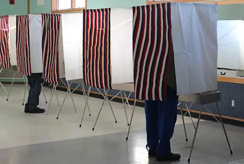
Now that you have learned about the Asch line experiments, why do you think the participants conformed? The correct answer to the line segment question was obvious, and it was an easy task. Researchers have categorized the motivation to conform into two types: normative social influence and informational social influence (Deutsch & Gerard, 1955).
In normative social influence, people conform to the group norm to fit in, to feel good, and to be accepted by the group. However, with informational social influence, people conform because they believe the group is competent and has the correct information, particularly when the task or situation is ambiguous. What type of social influence was operating in the Asch conformity studies? Since the line judgment task was unambiguous, participants did not need to rely on the group for information. Instead, participants complied to fit in and avoid ridicule, an instance of normative social influence.
An example of informational social influence may be what to do in an emergency situation. Imagine that you are in a movie theater watching a film and what seems to be smoke comes in the theater from under the emergency exit door. You are not certain that it is smoke—it might be a special effect for the movie, such as a fog machine. When you are uncertain you will tend to look at the behavior of others in the theater. If other people show concern and get up to leave, you are likely to do the same. However, if others seem unconcerned, you are likely to stay put and continue watching the movie (Figure 12.19).
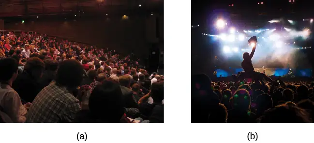
How would you have behaved if you were a participant in Asch’s study? Many students say they would not conform, that the study is outdated, and that people nowadays are more independent. To some extent this may be true. Research suggests that overall rates of conformity may have reduced since the time of Asch’s research. Furthermore, efforts to replicate Asch’s study have made it clear that many factors determine how likely it is that someone will demonstrate conformity to the group. These factors include the participant’s age, gender, and socio-cultural background (Bond & Smith, 1996; Larsen, 1990; Walker & Andrade, 1996).
Link to learning
Watch this video of a replication of the Asch experiment to learn more.
Stanley Milgram’s Experiment¶
Conformity is one effect of the influence of others on our thoughts, feelings, and behaviors. Another form of social influence is obedience to authority. Obedience is the change of an individual’s behavior to comply with a demand by an authority figure. People often comply with the request because they are concerned about a consequence if they do not comply. To demonstrate this phenomenon, we review another classic social psychology experiment.
Stanley Milgram was a social psychology professor at Yale who was influenced by the trial of Adolf Eichmann, a Nazi war criminal. Eichmann’s defense for the atrocities he committed was that he was “just following orders.” Milgram (1963) wanted to test the validity of this defense, so he designed an experiment and initially recruited 40 men for his experiment. The volunteer participants were led to believe that they were participating in a study to improve learning and memory. The participants were told that they were to teach other students (learners) correct answers to a series of test items. The participants were shown how to use a device that they were told delivered electric shocks of different intensities to the learners. The participants were told to shock the learners if they gave a wrong answer to a test item—that the shock would help them to learn. The participants believed they gave the learners shocks, which increased in 15-volt increments, all the way up to 450 volts. The participants did not know that the learners were confederates and that the confederates did not actually receive shocks.
In response to a string of incorrect answers from the learners, the participants obediently and repeatedly shocked them. The confederate learners cried out for help, begged the participant teachers to stop, and even complained of heart trouble. Yet, when the researcher told the participant-teachers to continue the shock, 65% of the participants continued the shock to the maximum voltage and to the point that the learner became unresponsive (Figure 12.20). What makes someone obey authority to the point of potentially causing serious harm to another person?
![A graph shows the voltage of shock given on the x-axis, and the percentage of participants who delivered voltage on the y-axis. All or nearly all participants delivered slight to moderate shock (15–135 volts); with strong to very strong shock (135–255 volts), the participation percentage dropped to about 80%; with intense to extremely intense shock (255–375 volts), the participation percentage dropped to about 65%; the participation percentage remained at about 65% for severe shock (375–435 volts) and XXX (435–450 volts).](img/cnx-psych-12-04-milgram.webp)
Several variations of the original Milgram experiment were conducted to test the boundaries of obedience. When certain features of the situation were changed, participants were less likely to continue to deliver shocks (Milgram, 1965). For example, when the setting of the experiment was moved to an off-campus office building, the percentage of participants who delivered the highest shock dropped to 48%. When the learner was in the same room as the teacher, the highest shock rate dropped to 40%. When the teachers’ and learners’ hands were touching, the highest shock rate dropped to 30%. When the researcher gave the orders by phone, the rate dropped to 23%. These variations show that when the humanity of the person being shocked was increased, obedience decreased. Similarly, when the authority of the experimenter decreased, so did obedience.
This case is still very applicable today. What does a person do if an authority figure orders something done? What if the person believes it is incorrect, or worse, unethical? In a study by Martin and Bull (2008), midwives privately filled out a questionnaire regarding best practices and expectations in delivering a baby. Then, a more senior midwife and supervisor asked the junior midwives to do something they had previously stated they were opposed to. Most of the junior midwives were obedient to authority, going against their own beliefs. Burger (2009) partially replicated this study. He found among a multicultural sample of women and men that their levels of obedience matched Milgram's research. Doliński et al. (2017) performed a replication of Burger's work in Poland and controlled for the gender of both participants and learners, and once again, results that were consistent with Milgram's original work were observed.
Groupthink¶
When in group settings, we are often influenced by the thoughts, feelings, and behaviors of people around us. Whether it is due to normative or informational social influence, groups have power to influence individuals. Another phenomenon of group conformity is groupthink. Groupthink is the modification of the opinions of members of a group to align with what they believe is the group consensus (Janis, 1972). In group situations, the group often takes action that individuals would not perform outside the group setting because groups make more extreme decisions than individuals do. Moreover, groupthink can hinder opposing trains of thought. This elimination of diverse opinions contributes to faulty decision by the group.
Dig Deeper: Groupthink in the U.S. Government
There have been several instances of groupthink in the U.S. government. One example occurred when the United States led a small coalition of nations to invade Iraq in March 2003. This invasion occurred because a small group of advisors and former President George W. Bush were convinced that Iraq represented a significant terrorism threat with a large stockpile of weapons of mass destruction at its disposal. Although some of these individuals may have had some doubts about the credibility of the information available to them at the time, in the end, the group arrived at a consensus that Iraq had weapons of mass destruction and represented a significant threat to national security. It later came to light that Iraq did not have weapons of mass destruction, but not until the invasion was well underway. As a result, 6000 American soldiers were killed and many more civilians died. How did the Bush administration arrive at their conclusions? View this video of Colin Powell, 10 years after his famous United Nations speech, discussing the information he had at the time that his decisions were based on. ("CNN Official Interview: Colin Powell now regrets UN speech about WMDs," 2010).
Do you see evidence of groupthink?
Why does groupthink occur? There are several causes of groupthink, which makes it preventable. When the group is highly cohesive, or has a strong sense of connection, maintaining group harmony may become more important to the group than making sound decisions. If the group leader is directive and makes his opinions known, this may discourage group members from disagreeing with the leader. If the group is isolated from hearing alternative or new viewpoints, groupthink may be more likely. How do you know when groupthink is occurring?
There are several symptoms of groupthink including the following:
- perceiving the group as invulnerable or invincible—believing it can do no wrong
- believing the group is morally correct
- self-censorship by group members, such as withholding information to avoid disrupting the group consensus
- the quashing of dissenting group members’ opinions
- the shielding of the group leader from dissenting views
- perceiving an illusion of unanimity among group members
- holding stereotypes or negative attitudes toward the out-group or others’ with differing viewpoints (Janis, 1972)
Given the causes and symptoms of groupthink, how can it be avoided? There are several strategies that can improve group decision making including seeking outside opinions, voting in private, having the leader withhold position statements until all group members have voiced their views, conducting research on all viewpoints, weighing the costs and benefits of all options, and developing a contingency plan (Janis, 1972; Mitchell & Eckstein, 2009).
Group Polarization¶
Another phenomenon that occurs within group settings is group polarization. Group polarization (Teger & Pruitt, 1967) is the strengthening of an original group attitude after the discussion of views within a group. That is, if a group initially favors a viewpoint, after discussion the group consensus is likely a stronger endorsement of the viewpoint. Conversely, if the group was initially opposed to a viewpoint, group discussion would likely lead to stronger opposition. Group polarization explains many actions taken by groups that would not be undertaken by individuals. Group polarization can be observed at political conventions, when platforms of the party are supported by individuals who, when not in a group, would decline to support them. Recently, some theorists have argued that group polarization may be partly responsible for the extreme political partisanship that seems ubiquitous in modern society. Given that people can self-select media outlets that are most consistent with their own political views, they are less likely to encounter opposing viewpoints. Over time, this leads to a strengthening of their own perspective and of hostile attitudes and behaviors towards those with different political ideals. Remarkably, political polarization leads to open levels of discrimination that are on par with, or perhaps exceed, racial discrimination (Iyengar & Westwood, 2015). A more everyday example is a group’s discussion of how attractive someone is. Does your opinion change if you find someone attractive, but your friends do not agree? If your friends vociferously agree, might you then find this person even more attractive?
Social traps refer to situations that arise when individuals or groups of individuals behave in ways that are not in their best interest and that may have negative, long-term consequences. However, once established, a social trap is very difficult to escape. For example, following World War II, the United States and the former Soviet Union engaged in a nuclear arms race. While the presence of nuclear weapons is not in either party's best interest, once the arms race began, each country felt the need to continue producing nuclear weapons to protect itself from the other.
Social Loafing¶
Imagine you were just assigned a group project with other students whom you barely know. Everyone in your group will get the same grade. Are you the type who will do most of the work, even though the final grade will be shared? Or are you more likely to do less work because you know others will pick up the slack? Social loafing involves a reduction in individual output on tasks where contributions are pooled. Because each individual's efforts are not evaluated, individuals can become less motivated to perform well. Karau and Williams (1993) and Simms and Nichols (2014) reviewed the research on social loafing and discerned when it was least likely to happen. The researchers noted that social loafing could be alleviated if, among other situations, individuals knew their work would be assessed by a manager (in a workplace setting) or instructor (in a classroom setting), or if a manager or instructor required group members to complete self-evaluations.
The likelihood of social loafing in student work groups increases as the size of the group increases (Shepperd & Taylor, 1999). According to Karau and Williams (1993), college students were the population most likely to engage in social loafing. Their study also found that women and participants from collectivistic cultures were less likely to engage in social loafing, explaining that their group orientation may account for this.
College students could work around social loafing or “free-riding” by suggesting to their professors use of a flocking method to form groups. Harding (2018) compared groups of students who had self-selected into groups for class to those who had been formed by flocking, which involves assigning students to groups who have similar schedules and motivations. Not only did she find that students reported less “free riding,” but that they also did better in the group assignments compared to those whose groups were self-selected.
Interestingly, the opposite of social loafing occurs when the task is complex and difficult (Bond & Titus, 1983; Geen, 1989). In a group setting, such as the student work group, if your individual performance cannot be evaluated, there is less pressure for you to do well, and thus less anxiety or physiological arousal (Latané, Williams, & Harkens, 1979). This puts you in a relaxed state in which you can perform your best, if you choose (Zajonc, 1965). If the task is a difficult one, many people feel motivated and believe that their group needs their input to do well on a challenging project (Jackson & Williams, 1985).
Deindividuation¶
Another way that being part of a group can affect behavior is exhibited in instances in which deindividuation occurs. Deindividuation refers to situations in which a person may feel a sense of anonymity and therefore a reduction in accountability and sense of self when among others. Deindividuation is often pointed to in cases in which mob or riot-like behaviors occur (Zimbardo, 1969), but research on the subject and the role that deindividuation plays in such behaviors has resulted in inconsistent results (as discussed in Granström, Guvå, Hylander, & Rosander, 2009).
Table 12.2 summarizes the types of social influence you have learned about in this chapter.
Table 12.2
| Types of Social Influence | |
|---|---|
| Type of Social Influence | Description |
| Conformity | Changing your behavior to go along with the group even if you do not agree with the group |
| Compliance | Going along with a request or demand |
| Normative social influence | Conformity to a group norm to fit in, feel good, and be accepted by the group |
| Informational social influence | Conformity to a group norm prompted by the belief that the group is competent and has the correct information |
| Obedience | Changing your behavior to please an authority figure or to avoid aversive consequences |
| Groupthink | Tendency to prioritize group cohesion over critical thinking that might lead to poor decision making; more likely to occur when there is perceived unanimity among the group |
| Group polarization | Strengthening of the original group attitude after discussing views within a group |
| Social loafing | Exertion of less effort by a person working in a group because individual performance cannot be evaluated separately from the group, thus causing performance decline on easy tasks |
| Deindividuation | Group situation in which a person may feel a sense of anonymity and a resulting reduction in accountability and sense of self |
12.5 Prejudice and Discrimination¶
Learning Objectives
By the end of this section, you will be able to:
- Define and distinguish among prejudice, stereotypes, and discrimination
- Provide examples of prejudice, stereotypes, and discrimination
- Explain why prejudice and discrimination exist
Human conflict can result in crime, war, and mass murder, such as genocide. Prejudice and discrimination often are root causes of human conflict, which explains how strangers come to hate one another to the extreme of causing others harm. Prejudice and discrimination affect everyone. In this section we will examine the definitions of prejudice and discrimination, examples of these concepts, and causes of these biases.
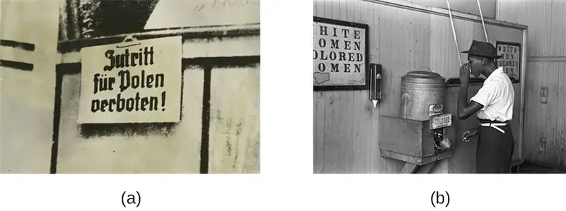
Understanding Prejudice and Discrimination¶
As we discussed in the opening story of Trayvon Martin, humans are very diverse and although we share many similarities, we also have many differences. The social groups we belong to help form our identities (Tajfel, 1974). These differences may be difficult for some people to reconcile, which may lead to prejudice toward people who are different. Prejudice is a negative attitude and feeling toward an individual based solely on one’s membership in a particular social group (Allport, 1954; Brown, 2010). Prejudice is common against people who are members of an unfamiliar cultural group. Thus, certain types of education, contact, interactions, and building relationships with members of different cultural groups can reduce the tendency toward prejudice. In fact, simply imagining interacting with members of different cultural groups might affect prejudice. Indeed, when experimental participants were asked to imagine themselves positively interacting with someone from a different group, this led to an increased positive attitude toward the other group and an increase in positive traits associated with the other group. Furthermore, imagined social interaction can reduce anxiety associated with inter-group interactions (Crisp & Turner, 2009). What are some examples of social groups that you belong to that contribute to your identity? Social groups can include gender, race, ethnicity, nationality, social class, religion, sexual orientation, profession, and many more. And, as is true for social roles, you can simultaneously be a member of more than one social group. An example of prejudice is having a negative attitude toward people who are not born in the United States. Although people holding this prejudiced attitude do not know all people who were not born in the United States, they dislike them due to their status as foreigners.
Can you think of a prejudiced attitude you have held toward a group of people? How did your prejudice develop? Prejudice often begins in the form of a stereotype—that is, a specific belief or assumption about individuals based solely on their membership in a group, regardless of their individual characteristics. Stereotypes become overgeneralized and applied to all members of a group. For example, someone holding prejudiced attitudes toward older adults, may believe that older adults are slow and incompetent (Cuddy, Norton, & Fiske, 2005; Nelson, 2004). We cannot possibly know each individual person of advanced age to know that all older adults are slow and incompetent. Therefore, this negative belief is overgeneralized to all members of the group, even though many of the individual group members may in fact be spry and intelligent.
Another example of a well-known stereotype involves beliefs about racial differences among athletes. As Hodge, Burden, Robinson, and Bennett (2008) point out, Black athletes are often believed to be more athletic, yet less intelligent, than their White counterparts. These beliefs persist despite a number of high profile examples to the contrary. Sadly, such beliefs often influence how these athletes are treated by others and how they view themselves and their own capabilities. Whether or not you agree with a stereotype, stereotypes are generally well-known within a given culture (Devine, 1989).
Sometimes people will act on their prejudiced attitudes toward a group of people, and this behavior is known as discrimination. Discrimination is negative action toward an individual as a result of one’s membership in a particular group (Allport, 1954; Dovidio & Gaertner, 2004). As a result of holding negative beliefs (stereotypes) and negative attitudes (prejudice) about a particular group, people often treat the target of prejudice poorly, such as excluding older adults from their circle of friends. In this way, discrimination is a form of oppression. An example of a psychologist experiencing gender discrimination is found in the life and studies of Mary Whiton Calkins. Calkins was given special permission to attend graduate seminars at Harvard (at that time in the late 1880s, Harvard did not accept women) and at one point was the sole student of the famous psychologist William James. She passed all the requirements needed for a PhD and was described by psychologist Hugo Münsterberg as “one of the strongest professors of psychology in this country.” However, Harvard refused to grant Calkins a PhD because she was a woman (Harvard University, 2019). Table 12.3 summarizes the characteristics of stereotypes, prejudice, and discrimination. Have you ever been the target of discrimination? If so, how did this negative treatment make you feel?
Table 12.3
| Connecting Stereotypes, Prejudice, and Discrimination | |||
|---|---|---|---|
| Item | Function | Connection | Example |
| Stereotype | Cognitive; thoughts about people | Overgeneralized beliefs about people may lead to prejudice. | “Yankees fans are arrogant and obnoxious.” |
| Prejudice | Affective; feelings about people, both positive and negative | Feelings may influence treatment of others, leading to discrimination. | “I hate Yankees fans; they make me angry.” |
| Discrimination | Behavior; positive or negative treatment of others | Holding stereotypes and harboring prejudice may lead to excluding, avoiding, and biased treatment of group members. | “I would never hire nor become friends with a person if I knew they were a Yankees fan.” |
So far, we’ve discussed stereotypes, prejudice, and discrimination as negative thoughts, feelings, and behaviors because these are typically the most problematic. However, it is important to also point out that people can hold positive thoughts, feelings, and behaviors toward individuals based on group membership; for example, they would show preferential treatment for people who are like themselves—that is, who share the same gender, race, or favorite sports team.
Link to Learning
Watch this video of a social experiment conducted in a park that demonstrates the concepts of prejudice, stereotypes, and discrimination. In the video, three people try to steal a bike out in the open. The race and gender of the thief is varied: a White male teenager, a Black male teenager, and a White female. Does anyone try to stop them? The treatment of the teenagers in the video demonstrates the concept of racism.
Prejudice and Discrimination¶
When we meet strangers we automatically process three pieces of information about them: their race, gender, and age (Ito & Urland, 2003). Why are these aspects of an unfamiliar person so important? Why don’t we instead notice whether their eyes are friendly, whether they are smiling, their height, the type of clothes they are wearing? Although these secondary characteristics are important in forming a first impression of a stranger, the social categories of race, gender, and age provide a wealth of information about an individual. This information, however, often is based on stereotypes. We may have different expectations of strangers depending on their race, gender, and age. What stereotypes and prejudices do you hold about people who are from a race, gender, and age group different from your own?
Racism¶
Racism is prejudice and discrimination against an individual based solely on one’s membership in a specific racial group (such as toward African Americans, Asian Americans, Latinos, Native Americans, European Americans). What are some stereotypes of various racial or ethnic groups? Research suggests cultural stereotypes for Asian Americans include cold, sly, and intelligent; for Latinos, cold and unintelligent; for European Americans, cold and intelligent; and for African Americans, aggressive, athletic, and more likely to be law breakers (Devine & Elliot, 1995; Fiske, Cuddy, Glick, & Xu, 2002; Sommers & Ellsworth, 2000; Dixon & Linz, 2000).
Racism exists for many racial and ethnic groups. For example, Black people are significantly more likely to have their vehicles searched during traffic stops than White people, particularly when Black people are driving in predominately White neighborhoods, a phenomenon often termed “DWB” or “driving while Black” (Rojek, Rosenfeld, & Decker, 2012).
Mexican Americans and other Latino groups also are targets of racism from the police and other members of the community. For example, when purchasing items with a personal check, Latino shoppers are more likely than White shoppers to be asked to show formal identification (Dovidio et al., 2010).
In one case of alleged harassment by the police, several East Haven, Connecticut, police officers were arrested on federal charges due to reportedly continued harassment and brutalization of Latinos. When the accusations came out, the mayor of East Haven was asked, “What are you doing for the Latino community today?” The Mayor responded, “I might have tacos when I go home, I’m not quite sure yet” (“East Haven Mayor,” 2012). This statement undermines the important issue of racial profiling and police harassment of Latinos, while belittling Latino culture by emphasizing an interest in a food product stereotypically associated with Latinos.
Racism is prevalent toward many other groups in the United States including Native Americans, Arab Americans, Jewish Americans, and Asian Americans. Have you experienced or witnessed racism toward any of these racial or ethnic groups? Are you aware of racism in your community?
One reason modern forms of racism, and prejudice in general, are hard to detect is related to the dual attitudes model (Wilson, Lindsey, & Schooler, 2000). Humans have two forms of attitudes: explicit attitudes, which are conscious and controllable, and implicit attitudes, which are unconscious and uncontrollable (Devine, 1989; Olson & Fazio, 2003). Because holding egalitarian views is socially desirable (Plant & Devine, 1998), most people do not show extreme racial bias or other prejudices on measures of their explicit attitudes. However, measures of implicit attitudes often show evidence of mild to strong racial bias or other prejudices (Greenwald, McGee, & Schwartz, 1998; Olson & Fazio, 2003).
Sexism¶
Sexism is prejudice and discrimination toward individuals based on their sex. Typically, sexism takes the form of men holding biases against women, but anyone can show sexism toward their own or the other sex. Like racism, sexism may be subtle and difficult to detect. Common forms of sexism in modern society include gender role expectations, such as expecting women to be the caretakers of the household. Sexism also includes people’s expectations for how members of a gender group should behave. For example, women are expected to be friendly, passive, and nurturing, and when women behave in an unfriendly, assertive, or neglectful manner they often are disliked for violating their gender role (Rudman, 1998). Research by Laurie Rudman (1998) finds that when female job applicants self-promote, they are likely to be viewed as competent, but they may be disliked and are less likely to be hired because they violated gender expectations for modesty. In this way, women are sometimes blamed for wage and employment inequality, but they would be viewed negatively for trying to overcome them, a phenomenon sometimes referred to as the double bind. Sexism can exist on a societal level such as in hiring, employment opportunities, and education. Women are less likely to be hired or promoted in male-dominated professions such as engineering, aviation, and construction (Figure 12.22) (Blau, Ferber, & Winkler, 2010; Ceci & Williams, 2011). Have you ever experienced or witnessed sexism? Think about your family members’ jobs or careers. Why do you think there are differences in the jobs women and men have, such as more women nurses but more male surgeons (Betz, 2008)?
Ageism¶
People often form judgments and hold expectations about people based on their age. These judgments and expectations can lead to ageism, or prejudice and discrimination toward individuals based solely on their age. Think of expectations you hold for older adults. How could someone’s expectations influence the feelings they hold toward individuals from older age groups? Ageism is widespread in U.S. culture (Nosek, 2005), and a common ageist attitude toward older adults is that they are incompetent, physically weak, and slow (Greenberg, Schimel, & Martens, 2002) and some people consider older adults less attractive. Chang, Kannoth, Levy, Wang, Lee, and Levy (2020) reported on relationships between ageism and health outcomes over a 40-year-plus period from countries around the world. Across 11 health domains, people over 50 were likely to experience ageism most often in the form of being denied access to health services and work opportunities. Some cultures, however, including some Asian, Latino, and African American cultures, both outside and within the United States afford older adults respect and honor.
Typically, ageism occurs against older adults, but ageism also can occur toward younger adults. What expectations do you hold toward younger people? Does society expect younger adults to be immature and irresponsible? Are younger generations seen as having it too easy or having weaker characters than older generations? Raymer, Reed, Spiegel, and Purvanova (2017) examined ageism against younger workers. They found that older workers endorsed negative stereotypes of younger workers, believing that they had more work deficit characteristics (including perceptions of incompetence). How might these forms of ageism affect a younger and older adult who are applying for a sales clerk position?
Homophobia and Transphobia¶
Another form of prejudice is homophobia: an umbrella term referring to prejudice and discrimination of individuals based solely on their sexual orientation, which is often applied to bisexual, lesbian, gay, and other non-heterosexual people. Transphobia is the hatred or fear of those who are perceived to break or blur stereotypical gender roles, often expressed as stereotyping, discrimination, harassment and/or violence. Like ageism, homophobia is a widespread prejudice in U.S. society that is tolerated by many people (Herek & McLemore, 2013; Nosek, 2005). Negative feelings often result in discrimination, such as the exclusion of lesbian, gay, bisexual, transgender, and queer (LGBTQ+) people from social groups and the avoidance of LGBTQ+ neighbors and co-workers. This discrimination also extends to employers deliberately declining to hire qualified LGBTQ+ job applicants, a practice officially outlawed by a 2020 Surpreme Court decision but which remains a significant issue. Have you experienced or witnessed homophobia? If so, what stereotypes, prejudiced attitudes, and discrimination were evident?
Why Do Prejudice and Discrimination Exist?¶
Prejudice and discrimination persist in society due to social learning and conformity to social norms. Children learn prejudiced attitudes and beliefs from society: their parents, teachers, friends, the media, and other sources of socialization, such as social media (O’Keeffe & Clarke-Pearson, 2011). If certain types of prejudice and discrimination are acceptable in a society, there may be normative pressures to conform and share those prejudiced beliefs, attitudes, and behaviors. For example, public and private schools are still somewhat segregated by social class. Historically, only children from wealthy families could afford to attend private schools, whereas children from middle- and low-income families typically attended public schools. If a child from a low-income family received a merit scholarship to attend a private school, how might the child be treated by classmates? Can you recall a time when you held prejudiced attitudes or beliefs or acted in a discriminatory manner because your group of friends expected you to?
Stereotypes and Self-Fulfilling Prophecy¶
When we hold a stereotype about a person, we have expectations that they will fulfill that stereotype. A self-fulfilling prophecy is an expectation held by a person that alters their behavior in a way that tends to make it true. When we hold stereotypes about a person, we tend to treat the person according to our expectations. This treatment can influence the person to act according to our stereotypic expectations, thus confirming our stereotypic beliefs. Research by Rosenthal and Jacobson (1968) found that disadvantaged students whose teachers expected them to perform well had higher grades than disadvantaged students whose teachers expected them to do poorly.
Consider this example of cause and effect in a self-fulfilling prophecy: If an employer expects an openly gay job applicant to be incompetent, the potential employer might treat the applicant negatively during the interview by engaging in less conversation, making little eye contact, and generally behaving coldly toward the applicant (Hebl, Foster, Mannix, & Dovidio, 2002). In turn, the job applicant will perceive that the potential employer dislikes him, and he will respond by giving shorter responses to interview questions, making less eye contact, and generally disengaging from the interview. After the interview, the employer will reflect on the applicant’s behavior, which seemed cold and distant, and the employer will conclude, based on the applicant’s poor performance during the interview, that the applicant was in fact incompetent. Thus, the employer’s stereotype—gay people are incompetent and do not make good employees—is reinforced. Do you think this job applicant is likely to be hired? Treating individuals according to stereotypic beliefs can lead to prejudice and discrimination.
Another dynamic that can reinforce stereotypes is confirmation bias. When interacting with the target of our prejudice, we tend to pay attention to information that is consistent with our stereotypic expectations and ignore information that is inconsistent with our expectations. In this process, known as confirmation bias, we seek out information that supports our stereotypes and ignore information that is inconsistent with our stereotypes (Wason & Johnson-Laird, 1972). In the job interview example, the employer may not have noticed that the job applicant was friendly and engaging, and that he provided competent responses to the interview questions in the beginning of the interview. Instead, the employer focused on the job applicant’s performance in the later part of the interview, after the applicant changed his demeanor and behavior to match the interviewer’s negative treatment. Have you ever fallen prey to the self-fulfilling prophecy or confirmation bias, either as the source or target of such bias? How might we stop the cycle of the self-fulfilling prophecy?
In-Groups and Out-Groups¶
As discussed previously in this section, we all belong to a gender, race, age, and social economic group. These groups provide a powerful source of our identity and self-esteem (Tajfel & Turner, 1979). These groups serve as our in-groups. An in-group is a group that we identify with or see ourselves as belonging to. A group that we don’t belong to, or an out-group, is a group that we view as fundamentally different from us. For example, if you are a woman, your gender in-group includes all women, and your gender out-group includes all men (Figure 12.23). People often view gender groups as being fundamentally different from each other in personality traits, characteristics, social roles, and interests. Because we often feel a strong sense of belonging and emotional connection to our in-groups, we develop in-group bias: a preference for our own group over other groups. This in-group bias can result in prejudice and discrimination because the out-group is perceived as different and is less preferred than our in-group.
Despite the group dynamics that seem only to push groups toward conflict, there are forces that promote reconciliation between groups: the expression of empathy, of acknowledgment of past suffering on both sides, and the halt of destructive behaviors.
One function of prejudice is to help us feel good about ourselves and maintain a positive self-concept. This need to feel good about ourselves extends to our in-groups: We want to feel good and protect our in-groups. We seek to resolve threats individually and at the in-group level. This often happens by blaming an out-group for the problem. Scapegoating is the act of blaming an out-group when the in-group experiences frustration or is blocked from obtaining a goal (Allport, 1954).
12.6 Aggression¶
Learning Objectives
By the end of this section, you will be able to:
- Define aggression
- Define cyberbullying
- Describe the bystander effect
Throughout this chapter we have discussed how people interact and influence one another’s thoughts, feelings, and behaviors in both positive and negative ways. People can work together to achieve great things, such as helping each other in difficult times: consider how educators and healthcare workers went to great lengths to help others during the COVID-19 pandemic. People also can do great harm to one another, such as conforming to group norms that are immoral and obeying authority to the point of murder: consider the mass conformity of Nazis during WWII. In this section we will discuss a negative side of human behavior—aggression.
A number of researchers have explored ways to reduce prejudice. One of the earliest was a study by Sherif et al. (1961) known as the Robbers Cave experiment. They found that when two opposing groups at a camp worked together toward a common goal, prejudicial attitudes between the groups decreased (Gaertner, Dovidio, Banker, Houlette, Johnson, & McGlynn, 2000). Focusing on superordinate goals was the key to attitude change in the research. Another study examined the jigsaw classroom, a technique designed by Aronson and Bridgeman in an effort to increase success in desegregated classrooms. In this technique, students work on an assignment in groups inclusive of various races and abilities. They are assigned tasks within their group, then collaborate with peers from other groups who were assigned the same task, and then report back to their original group. Walker and Crogan (1998) noted that the jigsaw classroom reduced potential for prejudice in Australia, as diverse students worked together on projects needing all of the pieces to succeed. This research suggests that anything that can allow individuals to work together toward common goals can decrease prejudicial attitudes. Obviously, the application of such strategies in real-world settings would enhance opportunities for conflict resolution.
Aggression¶
Humans engage in aggression when they seek to cause harm or pain to another person. Aggression takes two forms depending on one’s motives: hostile or instrumental. Hostile aggression is motivated by feelings of anger with intent to cause pain; a fight in a bar with a stranger is an example of hostile aggression. In contrast, instrumental aggression is motivated by achieving a goal and does not necessarily involve intent to cause pain (Berkowitz, 1993); a contract killer who murders for hire displays instrumental aggression.
There are many different theories as to why aggression exists. Some researchers argue that aggression serves an evolutionary function (Buss, 2004). Men are more likely than women to show aggression (Wilson & Daly, 1985). From the perspective of evolutionary psychology, human male aggression, like that in nonhuman primates, likely serves to display dominance over other males, both to protect a mate and to perpetuate the male’s genes (Figure 12.24). Sexual jealousy is part of male aggression; males endeavor to make sure their mates are not copulating with other males, thus ensuring their own paternity of the female’s offspring. Although aggression provides an obvious evolutionary advantage for men, women also engage in aggression. Women typically display more indirect forms of aggression, with their aggression serving as a means to an end (Dodge & Schwartz, 1997). For example, women may express their aggression covertly by communication that impairs the social standing of another person. Another theory that explains one of the functions of human aggression is frustration aggression theory (Dollard, Doob, Miller, Mowrer, & Sears, 1939). This theory states that when humans are prevented from achieving an important goal, they become frustrated and aggressive.
Bullying¶
Another form of aggression is bullying. As you learn in your study of child development, socializing and playing with other children is beneficial for children’s psychological development. However, as you may have experienced as a child, not all play behavior has positive outcomes. Some children are aggressive and want to play roughly. Other children are selfish and do not want to share toys. One form of negative social interactions among children that has become a national concern is bullying. Bullying is repeated negative treatment of another person, often an adolescent, over time (Olweus, 1993). A one-time incident in which one child hits another child on the playground would not be considered bullying: Bullying is repeated behavior. The negative treatment typical in bullying is the attempt to inflict harm, injury, or humiliation, and bullying can include physical or verbal attacks. However, bullying doesn’t have to be physical or verbal, it can be psychological. Research finds gender differences in how girls and boys bully others (American Psychological Association, 2010; Olweus, 1993). Boys tend to engage in direct, physical aggression such as physically harming others. Girls tend to engage in indirect, social forms of aggression such as spreading rumors, ignoring, or socially isolating others. Based on what you have learned about child development and social roles, why do you think boys and girls display different types of bullying behavior?
Bullying involves three parties: the bully, the victim, and witnesses or bystanders. The act of bullying involves an imbalance of power with the bully holding more power—physically, emotionally, and/or socially over the victim. The experience of bullying can be positive for the bully, who may enjoy a boost to self-esteem. However, there are several negative consequences of bullying for the victim, and also for the bystanders. How do you think bullying negatively impacts adolescents? Being the victim of bullying is associated with decreased mental health, including experiencing anxiety and depression (APA, 2010). Victims of bullying may underperform in schoolwork (Bowen, 2011). Bullying also can result in the victim dying by suicide (APA, 2010). How might bullying negatively affect witnesses?
Although there is not one single personality profile for who becomes a bully and who becomes a victim of bullying (APA, 2010), researchers have identified some patterns in children who are at a greater risk of being bullied (Olweus, 1993):
- Children who are emotionally reactive are at a greater risk for being bullied. Bullies may be attracted to children who get upset easily because the bully can quickly get an emotional reaction from them.
- Children who are different from others are likely to be targeted for bullying. Children who are overweight, cognitively impaired, or racially or ethnically different from their peer group may be at higher risk.
- Gay, lesbian, bisexual, and transgender teens are at very high risk of being bullied and hurt due to their sexual orientation.
Cyberbullying¶
With widely available mobile technology and social networking media, a new form of bullying has emerged: cyberbullying. Cyberbullying, like bullying, is repeated behavior that is intended to cause psychological or emotional harm to another person. What is unique about cyberbullying is that it is typically covert, concealed, done in private, and the bully can remain anonymous. This anonymity gives the bully power, and the victim may feel helpless, unable to escape the harassment, and unable to retaliate (Spears, Slee, Owens, & Johnson, 2009). About one in three middle and high school students report that they have experienced cyberbullying (Patchin, 2016; Patchin, 2019), with some studies indicating that nearly three in five teens have experienced some type of online abusive behavior such as non-repeated name-calling or being sent unsolicited links or images (Anderson, 2018).
Cyberbullying can take many forms, including harassing a victim by spreading rumors, creating a website defaming the victim, threatening the victim, or teasing the victim (Spears et al., 2009). Overall, LGBTQ youth are targeted at a higher rate than heterosexual and cisgender youth, and members of minority populations overall are more likely to be cyberbullying victims (Hinjuda & Patchin, 2020). In terms of gender, experiences vary in both the prevalence and types of cyberbullying experienced and perpetrated. In cyberbullying, it is more common for girls to be the bullies and victims. Interestingly, girls who become cyberbullies often have been the victims of cyberbullying at one time (Vandebosch & Van Cleemput, 2009). Girls were more likely to say someone spread rumors about them online while boys were more likely to say that someone threatened to hurt them online (Patchin, 2019). The effects of cyberbullying are just as harmful as traditional bullying and include the victim feeling frustration, anger, sadness, helplessness, powerlessness, and fear. Victims will also experience lower self-esteem (Hoff & Mitchell, 2009; Spears et al., 2009). Furthermore, recent research suggests that both cyberbullying victims and perpetrators are more likely to experience suicidal ideation, and they are more likely to attempt suicide than individuals who have no experience with cyberbullying (John, 2019). Cyberbullying is a form of aggression and, depending on the messages and methods, can be considered harassment, stalking, or assault—all subject to prosecution. Finally, while much of the concern and research regarding cyberbullying centers on adolescents, adults (particularly college students) are frequent victims and perpetrators. What features of technology make cyberbullying easier and perhaps more accessible to young adults? What can parents, teachers, and social networking websites do to prevent cyberbullying?
The Bystander Effect¶
The discussion of bullying highlights the problem of witnesses not intervening to help a victim. Researchers Latané and Darley (1968) described a phenomenon called the bystander effect. The bystander effect is a phenomenon in which a witness or bystander does not volunteer to help a victim or person in distress. Instead, they just watch what is happening. Social psychologists hold that we make these decisions based on the social situation, not our own personality variables. The impetus behind the bystander effect was the murder of a young woman named Kitty Genovese in 1964. The story of her tragic death took on a life of its own when it was reported that none of her neighbors helped her or called the police when she was being attacked. However, Kassin (2017) noted that her killer was apprehended due to neighbors who called the police when they saw him committing a burglary days later. Not only did bystanders indeed intervene in her murder (one man who shouted at the killer, a woman who said she called the police, and a friend who comforted her in her last moments), but other bystanders intervened in the capture of the murderer.
Even though some facets of the case were reported inaccurately, the Kitty Genovese case highlighted the phenomena of the bystander effect and helped social psychologists identify the role of diffusion of responsibility in why many individuals choose not to help in other similar cases. Diffusion of responsibility is the tendency for no one in a group to help because the responsibility to help is spread throughout the group (Bandura, 1999). Because there were many witnesses to the attack on Genovese, as evidenced by the number of lit apartment windows in the building, individuals assumed someone else must have already called the police. The responsibility to call the police was diffused across the number of witnesses to the crime. Have you ever passed an accident on the freeway and assumed that a victim or certainly another motorist has already reported the accident? In general, the greater the number of bystanders, the less likely any one person will help.
12.7 Prosocial Behavior¶
Learning Objectives
By the end of this section, you will be able to:
- Describe altruism
- Describe conditions that influence the formation of relationships
- Identify what attracts people to each other
- Describe the triangular theory of love
- Explain social exchange theory in relationships
You’ve learned about many of the negative behaviors of social psychology, but the field also studies many positive social interactions and behaviors. What makes people like each other? With whom are we friends? Whom do we date? Researchers have documented several features of the situation that influence whether we form relationships with others. There are also universal traits that humans find attractive in others. In this section we discuss conditions that make forming relationships more likely, what we look for in friendships and romantic relationships, the different types of love, and a theory explaining how our relationships are formed, maintained, and terminated.
Prosocial Behavior and Altruism¶
Do you voluntarily help others? Voluntary behavior with the intent to help other people is called prosocial behavior. Why do people help other people? Is personal benefit such as feeling good about oneself the only reason people help one another? Research suggests there are many other reasons. Altruism is people’s desire to help others even if the costs outweigh the benefits of helping. In fact, people acting in altruistic ways may disregard the personal costs associated with helping (Figure 12.26). For example, news accounts of the 9/11 terrorist attacks on the World Trade Center in New York reported an employee in the first tower helped his co-workers make it to the exit stairwell. After helping a co-worker to safety he went back in the burning building to help additional co-workers. In this case the costs of helping were great, and the hero lost his life in the destruction (Stewart, 2002).
Some researchers suggest that altruism operates on empathy. Empathy is the capacity to understand another person’s perspective, to feel what they feel. An empathetic person makes an emotional connection with others and feels compelled to help (Batson, 1991). Other researchers argue that altruism is a form of selfless helping that is not motivated by benefits or feeling good about oneself. Certainly, after helping, people feel good about themselves, but some researchers argue that this is a consequence of altruism, not a cause. Other researchers argue that helping is always self-serving because our egos are involved, and we receive benefits from helping (Cialdini, Brown, Lewis, Luce, & Neuberg 1997). It is challenging to determine experimentally the true motivation for helping, whether it is largely self-serving (egoism) or selfless (altruism). Thus, a debate on whether pure altruism exists continues.
Link to Learning
See this excerpt from the popular TV series Friends in which egoism versus altruism is debated to learn more.
Forming Relationships¶
What do you think is the single most influential factor in determining with whom you become friends and with whom you form romantic relationships? You might be surprised to learn that the answer is simple: the people with whom you have the most contact. This most important factor is proximity. You are more likely to be friends with people you have regular contact with. For example, there are decades of research that shows that you are more likely to become friends with people who live in your dorm, your apartment building, or your immediate neighborhood than with people who live farther away (Festinger, Schachler, & Back, 1950). It is simply easier to form relationships with people you see often because you have the opportunity to get to know them.
Similarity is another factor that influences who we form relationships with. We are more likely to become friends or lovers with someone who is similar to us in background, attitudes, and lifestyle. In fact, there is no evidence that opposites attract. Rather, we are attracted to people who are most like us (Figure 12.27) (McPherson, Smith-Lovin, & Cook, 2001). Why do you think we are attracted to people who are similar to us? Sharing things in common will certainly make it easy to get along with others and form connections. When you and another person share similar music taste, hobbies, food preferences, and so on, deciding what to do with your time together might be easy. Homophily is the tendency for people to form social networks, including friendships, marriage, business relationships, and many other types of relationships, with others who are similar (McPherson et al., 2001).
But, homophily limits our exposure to diversity (McPherson et al., 2001). By forming relationships only with people who are similar to us, we will have homogenous groups and will not be exposed to different points of view. In other words, because we are likely to spend time with those who are most like ourselves, we will have limited exposure to those who are different than ourselves, including people of different races, ethnicities, social-economic status, and life situations.
Once we form relationships with people, we desire reciprocity. Reciprocity is the give and take in relationships. We contribute to relationships, but we expect to receive benefits as well. That is, we want our relationships to be a two way street. We are more likely to like and engage with people who like us back. Self-disclosure is part of the two way street. Self-disclosure is the sharing of personal information (Laurenceau, Barrett, & Pietromonaco, 1998). We form more intimate connections with people with whom we disclose important information about ourselves. Indeed, self-disclosure is a characteristic of healthy intimate relationships, as long as the information disclosed is consistent with our own views (Cozby, 1973).
Attraction¶
We have discussed how proximity and similarity lead to the formation of relationships, and that reciprocity and self-disclosure are important for relationship maintenance. But, what features of a person do we find attractive? We don’t form relationships with everyone that lives or works near us, so how is it that we decide which specific individuals we will select as friends and lovers?
Researchers have documented several characteristics that humans find attractive. First we look for friends and lovers who are physically attractive. People differ in what they consider attractive, and attractiveness is culturally influenced. Research, however, suggests that some universally attractive features in women include large eyes, high cheekbones, a narrow jaw line, a slender build (Buss, 1989), and a lower waist-to-hip ratio (Singh, 1993). For men, attractive traits include being tall, having broad shoulders, and a narrow waist (Buss, 1989). Both men and women with high levels of facial and body symmetry are generally considered more attractive than asymmetric individuals (Fink, Neave, Manning, & Grammer, 2006; Penton-Voak et al., 2001; Rikowski & Grammer, 1999). Social traits that people find attractive in potential female mates include warmth, affection, and social skills; in males, the attractive traits include achievement, leadership qualities, and job skills (Regan & Berscheid, 1997). Although humans want mates who are physically attractive, this does not mean that we look for the most attractive person possible. In fact, this observation has led some to propose what is known as the matching hypothesis which asserts that people tend to pick someone they view as their equal in physical attractiveness and social desirability (Taylor, Fiore, Mendelsohn, & Cheshire, 2011). For example, you and most people you know likely would say that a very attractive movie star is out of your league. So, even if you had proximity to that person, you likely would not ask them out on a date because you believe you likely would be rejected. People weigh a potential partner’s attractiveness against the likelihood of success with that person. If you think you are particularly unattractive (even if you are not), you likely will seek partners that are fairly unattractive (that is, unattractive in physical appearance or in behavior).
Sternberg’s Triangular Theory of Love¶
We typically love the people with whom we form relationships, but the type of love we have for our family, friends, and lovers differs. Robert Sternberg (1986) proposed that there are three components of love: intimacy, passion, and commitment. These three components form a triangle that defines multiple types of love: this is known as Sternberg’s triangular theory of love (Figure 12.28). Intimacy is the sharing of details and intimate thoughts and emotions. Passion is the physical attraction—the flame in the fire. Commitment is standing by the person—the “in sickness and health” part of the relationship.
![Diagram shows a triangle. The interior of the triangle is labeled, “Consummate love; intimacy + passion + commitment.” The peak of the triangle is labeled, “Liking; intimacy.” The left side of the triangle is labeled, “Romantic love; passion + intimacy.” The right side of the triangle is labeled, “Companionate love; intimacy + commitment.” The bottom left corner of the triangle is labeled, “Infatuation; passion.” The bottom side of the triangle is labeled, “Fatuous love; passion + commitment.” The bottom right corner of the triangle is labeled, “Empty love; commitment.”](img/cnx-psych-12-07-love.webp)
Sternberg (1986) states that a healthy relationship will have all three components of love—intimacy, passion, and commitment—which is described as consummate love (Figure 12.29). However, different aspects of love might be more prevalent at different life stages. Other forms of love include liking, which is defined as having intimacy but no passion or commitment. Infatuation is the presence of passion without intimacy or commitment. Empty love is having commitment without intimacy or passion. Companionate love, which is characteristic of close friendships and family relationships, consists of intimacy and commitment but no passion. Romantic love is defined by having passion and intimacy, but no commitment. Finally, fatuous love is defined by having passion and commitment, but no intimacy, such as a long term sexual love affair. Can you describe other examples of relationships that fit these different types of love?
Social Exchange Theory¶
We have discussed why we form relationships, what attracts us to others, and different types of love. But what determines whether we are satisfied with and stay in a relationship? One theory that provides an explanation is social exchange theory. According to social exchange theory, we act as naïve economists in keeping a tally of the ratio of costs and benefits of forming and maintaining a relationship with others (Figure 12.30) (Rusbult & Van Lange, 2003).
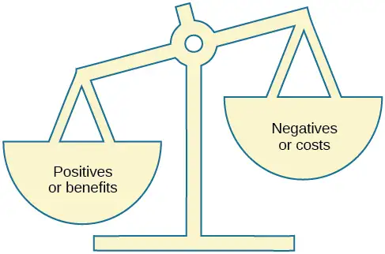
People are motivated to maximize the benefits of social exchanges, or relationships, and minimize the costs. People prefer to have more benefits than costs, or to have nearly equal costs and benefits, but most people are dissatisfied if their social exchanges create more costs than benefits. Let’s discuss an example. If you have ever decided to commit to a romantic relationship, you probably considered the advantages and disadvantages of your decision. What are the benefits of being in a committed romantic relationship? You may have considered having companionship, intimacy, and passion, but also being comfortable with a person you know well. What are the costs of being in a committed romantic relationship? You may think that over time boredom from being with only one person may set in; moreover, it may be expensive to share activities such as attending movies and going to dinner. However, the benefits of dating your romantic partner presumably outweigh the costs, or you wouldn’t continue the relationship.
Chapter Review¶
Key Terms¶
- actor-observer bias
- phenomenon of explaining other people’s behaviors are due to internal factors and our own behaviors are due to situational forces
- ageism
- prejudice and discrimination toward individuals based solely on their age
- aggression
- seeking to cause harm or pain to another person
- altruism
- humans’ desire to help others even if the costs outweigh the benefits of helping
- Asch effect
- group majority influences an individual’s judgment, even when that judgment is inaccurate
- attitude
- evaluations of or feelings toward a person, idea, or object that are typically positive or negative
- attribution
- explanation for the behavior of other people
- bullying
- a person, often an adolescent, being treated negatively repeatedly and over time
- bystander effect
- situation in which a witness or bystander does not volunteer to help a victim or person in distress
- central route persuasion
- logic-driven arguments using data and facts to convince people of an argument’s worthiness
- cognitive dissonance
- psychological discomfort that arises from a conflict in a person’s behaviors, attitudes, or beliefs that runs counter to one’s positive self-perception
- collectivist culture
- culture that focuses on communal relationships with others such as family, friends, and community
- companionate love
- type of love consisting of intimacy and commitment, but not passion; associated with close friendships and family relationships
- confederate
- person who works for a researcher and is aware of the experiment, but who acts as a participant; used to manipulate social situations as part of the research design
- confirmation bias
- seeking out information that supports our stereotypes while ignoring information that is inconsistent with our stereotypes
- conformity
- when individuals change their behavior to go along with the group even if they do not agree with the group
- consummate love
- type of love occurring when intimacy, passion, and commitment are all present
- cyberbullying
- repeated behavior that is intended to cause psychological or emotional harm to another person and that takes place online
- diffusion of responsibility
- tendency for no one in a group to help because the responsibility to help is spread throughout the group
- discrimination
- negative actions toward individuals as a result of their membership in a particular group
- dispositionism
- describes a perspective common to personality psychologists, which asserts that our behavior is determined by internal factors, such as personality traits and temperament
- empathy
- capacity to understand another person’s perspective—to feel what they feel
- foot-in-the-door technique
- persuasion of one person by another person, encouraging a person to agree to a small favor, or to buy a small item, only to later request a larger favor or purchase of a larger item
- fundamental attribution error
- tendency to overemphasize internal factors as attributions for behavior and underestimate the power of the situation
- group polarization
- strengthening of the original group attitude after discussing views within the group
- groupthink
- group members modify their opinions to match what they believe is the group consensus
- homophily
- tendency for people to form social networks, including friendships, marriage, business relationships, and many other types of relationships, with others who are similar
- homophobia
- prejudice and discrimination against individuals based solely on their sexual orientation
- hostile aggression
- aggression motivated by feelings of anger with intent to cause pain
- in-group
- group that we identify with or see ourselves as belonging to
- in-group bias
- preference for our own group over other groups
- individualistic culture
- culture that focuses on individual achievement and autonomy
- informational social influence
- conformity to a group norm prompted by the belief that the group is competent and has the correct information
- instrumental aggression
- aggression motivated by achieving a goal and does not necessarily involve intent to cause pain
- internal factor
- internal attribute of a person, such as personality traits or temperament
- just-world hypothesis
- ideology common in the United States that people get the outcomes they deserve
- justification of effort
- theory that people value goals and achievements more when they have put more effort into them
- normative social influence
- conformity to a group norm to fit in, feel good, and be accepted by the group
- obedience
- change of behavior to please an authority figure or to avoid aversive consequences
- out-group
- group that we don’t belong to—one that we view as fundamentally different from us
- peripheral route persuasion
- one person persuades another person; an indirect route that relies on association of peripheral cues (such as positive emotions and celebrity endorsement) to associate positivity with a message
- persuasion
- process of changing our attitude toward something based on some form of communication
- prejudice
- negative attitudes and feelings toward individuals based solely on their membership in a particular group
- prosocial behavior
- voluntary behavior with the intent to help other people
- racism
- prejudice and discrimination toward individuals based solely on their race
- reciprocity
- give and take in relationships
- romantic love
- type of love consisting of intimacy and passion, but no commitment
- scapegoating
- act of blaming an out-group when the in-group experiences frustration or is blocked from obtaining a goal
- script
- person’s knowledge about the sequence of events in a specific setting
- self-disclosure
- sharing personal information in relationships
- self-fulfilling prophecy
- treating stereotyped group members according to our biased expectations only to have this treatment influence the individual to act according to our stereotypic expectations, thus confirming our stereotypic beliefs
- self-serving bias
- tendency for individuals to take credit by making dispositional or internal attributions for positive outcomes and situational or external attributions for negative outcomes
- sexism
- prejudice and discrimination toward individuals based on their sex
- situationism
- describes a perspective that behavior and actions are determined by the immediate environment and surroundings; a view promoted by social psychologists
- social exchange theory
- humans act as naïve economists in keeping a tally of the ratio of costs and benefits of forming and maintain a relationship, with the goal to maximize benefits and minimize costs
- social loafing
- exertion of less effort by a person working in a group because individual performance cannot be evaluated separately from the group, thus causing performance decline on easy tasks
- social norm
- group’s expectations regarding what is appropriate and acceptable for the thoughts and behavior of its members
- social psychology
- field of psychology that examines how people impact or affect each other, with particular focus on the power of the situation
- social role
- socially defined pattern of behavior that is expected of a person in a given setting or group
- stanford prison experiment
- Stanford University conducted an experiment in a mock prison that demonstrated the power of social roles, social norms, and scripts
- stereotype
- specific beliefs or assumptions about individuals based solely on their membership in a group, regardless of their individual characteristics
- triangular theory of love
- model of love based on three components: intimacy, passion, and commitment; several types of love exist, depending on the presence or absence of each of these components
Summary¶
12.1 What Is Social Psychology?¶
Social psychology is the subfield of psychology that studies the power of the situation to influence individuals’ thoughts, feelings, and behaviors. Psychologists categorize the causes of human behavior as those due to internal factors, such as personality, or those due to external factors, such as cultural and other social influences. Behavior is better explained, however, by using both approaches. Lay people tend to over-rely on dispositional explanations for behavior and ignore the power of situational influences, a perspective called the fundamental attribution error. People from individualistic cultures are more likely to display this bias versus people from collectivistic cultures. Our explanations for our own and others behaviors can be biased due to not having enough information about others’ motivations for behaviors and by providing explanations that bolster our self-esteem.
12.2 Self-presentation¶
Human behavior is largely influenced by our social roles, norms, and scripts. In order to know how to act in a given situation, we have shared cultural knowledge of how to behave depending on our role in society. Social norms dictate the behavior that is appropriate or inappropriate for each role. Each social role has scripts that help humans learn the sequence of appropriate behaviors in a given setting. The famous Stanford prison experiment is an example of how the power of the situation can dictate the social roles, norms, and scripts we follow in a given situation, even if this behavior is contrary to our typical behavior.
12.3 Attitudes and Persuasion¶
Attitudes are our evaluations or feelings toward a person, idea, or object and typically are positive or negative. Our attitudes and beliefs are influenced not only by external forces, but also by internal influences that we control. An internal form of attitude change is cognitive dissonance or the tension we experience when our thoughts, feelings, and behaviors are in conflict. In order to reduce dissonance, individuals can change their behavior, attitudes, or cognitions, or add a new cognition. External forces of persuasion include advertising; the features of advertising that influence our behaviors include the source, message, and audience. There are two primary routes to persuasion. The central route to persuasion uses facts and information to persuade potential consumers. The peripheral route uses positive association with cues such as beauty, fame, and positive emotions.
12.4 Conformity, Compliance, and Obedience¶
The power of the situation can lead people to conform, or go along with the group, even in the face of inaccurate information. Conformity to group norms is driven by two motivations, the desire to fit in and be liked and the desire to be accurate and gain information from the group. Authority figures also have influence over our behaviors, and many people become obedient and follow orders even if the orders are contrary to their personal values. Conformity to group pressures can also result in groupthink, or the faulty decision-making process that results from cohesive group members trying to maintain group harmony. Group situations can improve human behavior through facilitating performance on easy tasks, but inhibiting performance on difficult tasks. The presence of others can also lead to social loafing when individual efforts cannot be evaluated.
12.5 Prejudice and Discrimination¶
As diverse individuals, humans can experience conflict when interacting with people who are different from each other. Prejudice, or negative feelings and evaluations, is common when people are from a different social group (i.e., out-group). Negative attitudes toward out-groups can lead to discrimination. Prejudice and discrimination against others can be based on gender, race, ethnicity, social class, sexual orientation, or a variety of other social identities. In-group’s who feel threatened may blame the out-groups for their plight, thus using the out-group as a scapegoat for their frustration.
12.6 Aggression¶
Aggression is seeking to cause another person harm or pain. Hostile aggression is motivated by feelings of anger with intent to cause pain, and instrumental aggression is motivated by achieving a goal and does not necessarily involve intent to cause pain. Bullying is an international public health concern that largely affects the adolescent population. Bullying is repeated behaviors that are intended to inflict harm on the victim and can take the form of physical, psychological, emotional, or social abuse. Bullying has negative mental health consequences for youth including suicide. Cyberbullying is a newer form of bullying that takes place in an online environment where bullies can remain anonymous and victims are helpless to address the harassment. Despite the social norm of helping others in need, when there are many bystanders witnessing an emergency, diffusion of responsibility will lead to a lower likelihood of any one person helping.
12.7 Prosocial Behavior¶
Altruism is a pure form of helping others out of empathy, which can be contrasted with egoistic motivations for helping. Forming relationships with others is a necessity for social beings. We typically form relationships with people who are close to us in proximity and people with whom we share similarities. We expect reciprocity and self-disclosure in our relationships. We also want to form relationships with people who are physically attractive, though standards for attractiveness vary by culture and gender. There are many types of love that are determined by various combinations of intimacy, passion, and commitment; consummate love, which is the ideal form of love, contains all three components. When determining satisfaction and whether to maintain a relationship, individuals often use a social exchange approach and weigh the costs and benefits of forming and maintaining a relationship.
References¶
References
Adams, H. E., Wright, L. W., Jr., & Lohr, B.A. (1996). Is homophobia associated with homosexual arousal? Journal of Abnormal Psychology, 105, 440–445.
Albarracín, D., & Wyer, R. S. (2001). Elaborative and nonelaborative processing of a behavior-related communication. Personality and Social Psychology Bulletin, 27, 691–705.
Allport, G. W. (1954). The Nature of Human Prejudice. Addison-Wesley.
American Psychological Association. (n.d.) Social psychology studies human interactions. https://www.apa.org/action/science/social/
American Psychological Association. (2010). Bullying: What parents, teachers can do to stop it. http://www.apa.org/news/press/releases/2010/04/bullying.aspx.
Anderson, M. (2018). A majority of teens have experienced some form of cyberbullying. Pew Research Center. https://www.pewresearch.org/internet/2018/09/27/a-majority-of-teens-have-experienced-some-form-of-cyberbullying/
Aronson, E., & Mills, J. (1959). The effect of severity of initiation on liking for a group, Journal of Abnormal and Social Psychology, 59, 177–181.
Asch, S. E. (1955). Opinions and social pressure. Scientific American, 193, 31–35.
Bandura, A. (1999). Moral disengagement in the perpetration of inhumanities. Personality and Social Psychology Review, 3(3), 193–209. doi:10.1207/s15327957pspr0303_3.
Bartels, J. (2019). Revisiting the Stanford prison experiment, again: Examining demand characteristics in the guard orientation. The Journal of Social Psychology, 159(6), 780–790.
Bartels, J. M., Milovich, M. M., & Moussier, S. (2016). Coverage of the Stanford prison experiment in introductory psychology courses: A survey of introductory psychology instructors. Teaching of Psychology, 43(2), 136–141.
Batson, C. D. (1991). The altruism question: Toward a social-psychological answer. Erlbaum.
Berkowitz, A. D. (2004). The social norms approach: Theory, research and annotated bibliography. http://www.alanberkowitz.com/articles/social_norms.pdf.
Berkowitz, L. (1993). Aggression: Its causes, consequences, and control. McGraw-Hill.
Betz, N. E. (2008). Women’s career development. In F. Denmark & M. Paludi (Eds.), Psychology of women: Handbook of issues and theories (2nd ed., pp. 717–752). Praeger.
Blau, F. D., Ferber, M. A., & Winkler, A. E. (2010). The economics of women, men, and work (6th ed.). Prentice Hall.
Bond, C. F., & Titus, L. J. (1983). Social facilitation: A meta-analysis of 241 studies. Psychological Bulletin, 94, 265–292.
Bond, R., & Smith, P. B. (1996). Culture and conformity: A meta-analysis of studies using Asch’s (1952b, 1956) line judgment task. Psychological Bulletin, 119(1), 111–137.
Bowen, L. (2011). Bullying may contribute to lower test scores. Monitor on Psychology, 42(9), 19.
Brown, R. (2010). Prejudice: Its social psychology (2nd ed.). Wiley-Blackwell.
Burger, J. (2009). Replicating Milgram: Would people still obey today? American Psychologist, 64, 1–11. https://www.ncbi.nlm.nih.gov/pubmed/19209958
Buss, D. M. (2004). Evolutionary psychology: The new science of the mind (2nd ed.). Allyn and Bacon.
Buss, D. M. (1989). Sex differences in human mate preferences: Evolutionary hypotheses tested in 37 cultures. Behavioral and Brain Sciences, 12, 1–49.
Carnahan, T., & McFarland, S. (2007). Revisiting the Stanford Prison Experiment: Could participant self-selection have led to the cruelty? Personality and Social Psychology Bulletin, 33(5), 603–614.
Ceci, S. J., & Williams, W. M. (2011). Understanding current causes of women’s underrepresentation in science. Proceedings of the National Academy of Sciences, 108, 3157–3162.
Chang, E., Kannoth, S., Levy, S., Wang, S., Lee, J., & Levy, B. (2020). Global reach of ageism on older persons' health: A systematic review. PLoS ONE, 15, 1–24.
Choi, I., & Nisbett R. E. (1998). Situational salience and cultural differences in the correspondence bias and actor-observer bias. Personality and Social Psychology Bulletin, 24(9), 949–960. doi:10.1177/0146167298249003.
Cialdini, R. B. (2001). Harnessing the science of persuasion. Harvard Business Review, 79, 72–81.
Cialdini, R. B., Brown, S. L., Lewis, B. P., Luce, C., & Neuberg, S. L. (1997). Reinterpreting the empathy-altruism relationship: When one into one equals oneness. Journal of Personality and Social Psychology, 73, 481–494.
Colin Powell regrets Iraq war intelligence. (2011). http://www.aljazeera.com/news/americas/2011/09/20119116916873488.html.
Cozby, P. C. (1973). Self-disclosure: A literature review. Psychological Bulletin, 79, 73–91.
Crisp, R. J., & Turner, R. N. (2009). Can imagined interactions produce positive perceptions? Reducing prejudice through simulated social contact. American Psychologist, 64, 231–240.
Crowley, A. E., & Hoyer, W. D. (1994). An integrative framework for understanding two-sided persuasion. Journal of Consumer Research, 20(4), 561–574.
Croyle, R. T., & Cooper, J. (1983). Dissonance arousal: Physiological evidence. Journal of Personality and Social Psychology, 45, 782–791.
Cuddy, A. J., Norton, M. I., & Fiske, S. T. (2005). This old stereotype: The pervasiveness and persistence of the elderly stereotype. Journal of Social Issues, 61, 267–285.
Deutsch, M., & Gerard, H. (1955). A study of normative and informational social influences upon individual judgment. Journal of Abnormal and Social Psychology, 51, 629–636.
Devine, P. G. (1989). Stereotypes and prejudice: Their automatic and controlled components. Journal of Personality and Social Psychology, 56, 5–18.
Devine, P. G., & Elliot, A. J. (1995). Are racial stereotypes really fading? The Princeton trilogy revisited. Personality and Social Psychology Bulletin, 21, 1139–1150.
Dixon, T. L., & Linz D. (2000). Overrepresentation and underrepresentation of African Americans and Latinos as lawbreakers on television news. Journal of Communication, 50(2), 131–154.
Dodge, K. A., & Schwartz, D. (1997). Social information processing mechanisms in aggressive behavior. In D. M. Stoff and J. Breiling (Eds.), Handbook of Antisocial Behavior (pp. 171–180). John Wiley and Sons.
Doliński, D., Grzyb, T., Folwarczny, M., Grzybała, P., Krzyszycha, K., Martynowska, K., & Trojanowski, J. (2017). Would you deliver an electric shock in 2015? Obedience in the experimental paradigm developed by Stanley Milgram in the 50 years following the original studies. Social Psychological and Personality Science, 8(8), 927–933.
Dollard, J., Miller, N. E., Doob, L. W., Mowrer, O. H., & Sears, R. R. (1939). Frustration and aggression. Yale University Press.
Dovidio, J. F., & Gaertner, S. L. (2004). On the nature of contemporary prejudice. In P. S. Rothenberg, (Ed.), Race, class, and gender in the United States: An integrated study (6th ed., pp. 132–142). Worth.
Dovidio, J. F., Gluszek, A., John, M. S., Ditlmann, R., & Lagunes, P. (2010). Understanding bias toward Latinos: Discrimination, dimensions of difference, and experience of exclusion. Journal of Social Issues, 66, 59–78.
Eagly, A. H., & Chaiken, S. (1975). An attribution analysis of the effect of communicator characteristics on opinion change: The case of communicator attractiveness. Journal of Personality and Social Psychology, 32, 136–144.
Eagly, A. H., & Chaiken, S. (1993). The psychology of attitudes. Harcourt Brace Jovanovich College.
East Haven mayor suggests “he might have tacos” to repair relations with Latinos. (2012). https://www.youtube.com/watch?v=PCUwtfqF4wU.
Ehrlinger, J., Gilovich, T., & Ross, L. (2005). Peering into the bias blind spot: People's assessments of bias in themselves and others. Personality and Social Psychology Bulletin, 31, 680–692.
Festinger, L. (1957). A theory of cognitive dissonance. Stanford University Press.
Festinger, L., & Maccoby, N. (1964). On resistance to persuasive communications. The Journal of Abnormal and Social Psychology, 68, 359–366.
Festinger, L., Schachler, S., & Back, K. W. (1950). Social pressures in informal groups: A study of human factors in housing. Harper.
Fink, B., Neave, N., Manning, J. T., & Grammer, K. (2006). Facial symmetry and judgments of attractiveness, health and personality. Personality and Individual Differences, 41, 491–499.
Fiske, S. T., Cuddy, A. J., Glick, P., & Xu, J. (2002). A model of (often mixed) stereotype content: Competence and warmth respectively follow from perceived status and competition. Journal of Personality and Social Psychology, 82(6), 878–902.
Fiske, S. T., Gilbert, D. T., & Lindzey, G. (2010). Handbook of social psychology (5th ed.). Wiley.
Freedman, J. L., & Fraser, S. C. (1966). Compliance without pressure: The foot-in-the-door technique. Journal of Personality and Social Psychology, 4, 195–202.
Gaertner, S., Dovidio, J., Banker, B., Houlette, M., Johnson, K., & McGlynn, E. (2000). Reducing intergroup conflict: From superordinate goals to decategorization, recategorization, and mutual differentiation. Group Dynamics: Theory, Research, and Practice, 4, 98–114. https://psycnet.apa.org/doiLanding?doi=10.1037%2F1089-2699.4.1.98
Geen, R. G. (1989). Alternative conceptions of social facilitation. In P. B. Paulus (Ed.), Psychology of group influence (2nd ed., pp. 15–51). Lawrence Erlbaum.
Granström, K., Guvå, G., Hylander, I., & Rosander, M. (2009). Riots and disturbances: How riots start and how order is secured. Linköping University Electronic Press.
Greenberg, J., Schimel, J., & Martens, A. (2002). Ageism: Denying the face of the future. In T. D. Nelson (Ed.), Ageism: Stereotyping and prejudice against older persons (pp. 27–48). MIT Press.
Greenwald, A. G., McGhee, D. E., & Schwartz, J. L. (1998). Measuring individual differences in implicit cognition: The implicit association test. Journal of Personality and Social Psychology, 74, 1464–1480.
Greenwald, A. G., & Ronis, D. L. (1978). Twenty years of cognitive dissonance: Case study of the evolution of a theory. Psychological Review, 85, 53–57.
Griggs, R. A. (2014). Coverage of the Stanford Prison Experiment in introductory psychology textbooks. Teaching of Psychology, 41(3), 195–203.
Grove, J. R., Hanrahan, S. J., & McInman, A. (1991). Success/failure bias in attributions across involvement categories in sport. Personality and Social Psychology Bulletin, 17(1), 93–97.
Gupta, P. B., & Lord, K. R. (1998). Product placement in movies: The effect of prominence and mode on recall. Journal of Current Issues and Research in Advertising, 20, 47–59.
Harding, L. (2018). Students of a feather "flocked" together: A group assignment method for reducing free-riding and improving group and individual learning outcomes. Journal of Marketing Education, 40, 117–127. https://journals.sagepub.com/doi/10.1177/0273475317708588
Hare, A. P. (2003). Roles, relationships, and groups in organizations: Some conclusions and recommendations. Small Group Research, 34, 123–154.
Harvard University, Department of Psychology. (2019). Mary Whiton Calkins. https://psychology.fas.harvard.edu/people/mary-whiton-calkins
Haugtvedt, C. P., & Wegener, D. T. (1994). Message order effects in persuasion: An attitude strength perspective. Journal of Consumer Research, 21, 205–218.
Hebl, M. R., Foster, J. B., Mannix, L. M., & Dovidio, J. F. (2002). Formal and interpersonal discrimination: A field study of bias toward homosexual applicants. Personality and Social Psychology Bulletin, 28(6), 815–825.
Heckert, T. M., Latier, A., Ringwald-Burton, A., & Drazen, C. (2006). Relations among student effort, perceived class difficulty appropriateness, and student evaluations of teaching: Is it possible to "buy" better evaluations through lenient grading? College Student Journal, 40(3), 588.
Herek, G. M., & McLemore, K. A. (2013). Sexual prejudice. Annual Review of Psychology, 64, 309–33. doi:10.1146/annurev-psych-113011-143826.
Heider, F. (1958). The psychology of interpersonal relations. Wiley.
Hinduja, S. & Patchin, J. W. (2011). Cyberbullying research summary: Bullying, cyberbullying, and sexual orientation. Cyberbullying Research Center. http://www.cyberbullying.us/cyberbullying_sexual_orientation_fact_sheet.pdf.
Hinduja, S. & Patchin, J. W. (2019). 2019 Cyberbullying Data. Cyberbullying Research Center. https://cyberbullying.org/2019-cyberbullying-data
Hinduja, S. & Patchin, J. W. (2020). Bullying, Cyberbullying, and Sexual Orientation/Gender Identity. Cyberbullying Research Center. https://cyberbullying.org/bullying-cyberbullying-lgbtq
Hodge, S. R., Burden, J. W., Jr., Robinson, L. E., & Bennett, R. A., III. (2008). Theorizing on the stereotyping of Black male student-athletes. Journal for the Study of Sports and Athletes in Education, 2, 203–226.
Hoff, D. L., & Mitchell, S. N. (2009). Cyberbullying: Causes, effects, and remedies. Journal of Education, 47, 652–665.
Hovland, C. I., Janis, I. L. and Kelley, H. H. (1953). Communications and persuasion: Psychological studies in opinion change. Yale University Press.
Hovland, C.I., Weiss, W. (1951, Winter). The influence of source credibility on communication effectiveness. Public Opinion Quarterly, 15(4), 635–650.
Igou, E. R., & Bless, H. (2003). Inferring the importance of arguments: Order effects and conversational rules. Journal of Experimental Social Psychology, 39, 91–99.
Ito, T. A., & Urland, G. R., (2003). Race and gender on the brain: Electrocortical measures of attention to race and gender of multiply categorizable individuals. Journal of Personality & Social Psychology, 85, 616–626.
Iyengar, S., & Westwood, S. J. (2015). Fear and loathing across party lines: New evidence on group polarization. American Journal of Political Science, 59(3), 690–707.
Jackson, J. M., & Williams, K. D. (1985). Social loafing on difficult tasks: Working collectively can improve performance. Journal of Personality and Social Psychology, 49, 937–942.
Janis, I. L. (1972). Victims of groupthink. Houghton Mifflin.
John, Ann. (2019). Self-Harm, Suicidal Behaviours, and Cyberbullying in Children and Young People: Systematic Review. Journal of Medical Internet Research. https://www.jmir.org/2018/4/e129/
Jones, E. E., & Nisbett, R. E. (1971). The actor and the observer: Divergent perceptions of the causes of behavior. General Learning Press.
Jost, J. T., Banaji, M. R., & Nosek, B. A. (2004). A decade of system justification theory: Accumulated evidence of conscious and unconscious bolstering of the status quo. Political Psychology, 25, 881–919.
Jost, J. T., & Major, B. (Eds.). (2001). The psychology of legitimacy: Emerging perspectives on ideology, justice, and intergroup relations. Cambridge University Press.
Karau, S. J., & Williams, K. D. (1993). Social loafing: A meta-analytic review and theoretical integration. Journal of Personality and Social Psychology, 65, 681–706.
Kassin, S. (2017). The killing of Kitty Genovese: What else does this case tell us? Perspectives on Psychological Science, 12, 374–381. https://journals.sagepub.com/doi/abs/10.1177/1745691616679465
Krosnick, J. A., & Alwin, D. F. (1989). Aging and susceptibility to attitude change. Journal of Personality and Social Psychology, 57, 416–425.
Kumkale, G. T., & Albarracín, D. (2004). The sleeper effect in persuasion: A meta-analytic review. Psychological Bulletin, 130(1), 143–172. doi:10.1037/0033-2909.130.1.143.
Larsen, K. S. (1990). The Asch conformity experiment: Replication and transhistorical comparisons. Journal of Social Behavior & Personality, 5(4), 163–168.
Latané, B., & Darley, J. M. (1968). Group inhibition of bystander intervention in emergencies. Journal of Personality and Social Psychology, 10, 215–221.
Latané, B., Williams, K. and Harkins, S. G. (1979). Many hands make light the work: The causes and consequences of social loafing. Journal of Personality and Social Psychology, 37, 822–832.
Laurenceau, J.-P., Barrett, L. F., & Pietromonaco, P. R. (1998). Intimacy as an interpersonal process: The importance of self-disclosure, partner disclosure, and perceived partner responsiveness in interpersonal exchanges. Journal of Personality and Social Psychology, 74(5), 1238–1251. doi:10.1037/0022-3514.74.5.1238.
Le Texier, T. (2019). Debunking the Stanford Prison Experiment. American Psychologist. 74(7), 823–839.
Lerner, M. J., & Miller, D. T. (1978). Just world research and the attribution process: Looking back and ahead. Psychological Bulletin, 85, 1030–1051.
Lumsdaine, A. A., & Janis, I. L. (1953). Resistance to “counterpropaganda” produced by one-sided and two-sided “propaganda” presentations. Public Opinion Quarterly, 17, 311–318.
Malle, B. F. (2006). The actor–observer asymmetry in attribution: A (surprising) meta-analysis. Psychological Bulletin, 132(6), 895–919. doi:10.1037/0033-2909.132.6.895.
Malloy, T. E., Albright, L., Kenny, D. A., Agatstein, F., & Winquist, L. (1997). Interpersonal perception and metaperception in non-overlapping social groups. Journal of Personality and Social Psychology, 72, 390–398.
Markus, H. R., & Kitayama, S. (1991). Culture and the self: Implications for cognition, emotion, and motivation. Psychological Review, 98, 224–253.
Martin, C. H., & Bull, P. (2008). Obedience and conformity in clinical practice. British Journal of Midwifery, 16(8), 504–509.
Masuda, T., & Nisbett, R. E. (2001). Attending holistically versus analytically: Comparing the context sensitivity of Japanese and Americans. Journal of Personality and Social Psychology, 81(5), 922–934. https://psycnet.apa.org/doiLanding?doi=10.1037%2F0022-3514.81.5.922
McPherson, M., Smith-Lovin, L., & Cook, J. M. (2001). Birds of a feather: Homophily in social networks. Annual Review of Sociology, 27, pp. 415–444. doi:10.1146/annurev.soc.27.1.415.
Milgram, S. (1963). Behavioral study of obedience. Journal of Abnormal and Social Psychology, 67, 371–378.
Milgram, S. (1965). Some conditions of obedience and disobedience to authority. Human Relations, 18, 57–76.
Miller, D. T., & Ross, M. (1975). Self-serving biases in the attribution of causality: Fact or fiction? Psychological Bulletin, 82, 213–225.
Miller, N., & Campbell, D. T. (1959). Recency and primacy in persuasion as a function of the timing of speeches and measurements. The Journal of Abnormal and Social Psychology, 59, 1–9.
Mischel, W. (1977). The interaction of person and situation. Personality at the crossroads: Current issues in interactional psychology, 333, 352.
Mitchell, D. H., & Eckstein, D. (2009). Jury dynamics and decision-making: A prescription for groupthink. International Journal of Academic Research, 1(1), 163–169.
Nelson, T. (Ed.). (2004). Ageism: Stereotyping and prejudice against older persons. The MIT Press.
Nisbett, R. E., Caputo, C., Legant, P., & Marecek, J. (1973). Behavior as seen by the actor and as seen by the observer. Journal of Personality and Social Psychology, 27, 154–164.
Nisbett, R. E., Peng, K., Choi, I., & Norenzayan, A. (2001). Culture and systems of thought: Holistic versus analytic cognition. Psychological Review, 108, 291–310.
Nosek, B. A. (2005). Moderators of the relationship between implicit and explicit evaluation. Journal of Experimental Psychology: General, 134(4), 565–584.
O'Keeffe, G. S., & Clarke-Pearson, K. (2011). The impact of social media on children, adolescents, and families. Pediatrics, (127)4, 800–4. doi:10.1542/peds.2011-0054.
Olson, M. A., & Fazio, R. H. (2003). Relations between implicit measures of prejudice what are we measuring? Psychological Science, 14, 636–639.
Olweus, D. (1993). Bullying at school: What we know and what we can do. Wiley-Blackwell.
Penton-Voak, I. S., Jones, B. C., Little, A. C., Baker, S., Tiddeman, B., Burt, D. M., & Perrett, D. I. (2001). Symmetry, sexual dimorphism in facial proportions and male facial attractiveness. Proceedings of the Royal Society B: Biological Sciences, 268, 1617–1623.
Petty, R. E., & Cacioppo, J. T. (1986). The elaboration likelihood model of persuasion. In Communication and persuasion: Central and peripheral routes to attitude change (pp. 1–24). Springer. doi:10.1007/978-1-4612-4964-1.
Petty, R. E., Wegener, D. T., & Fabrigar, L. R. (1997). Attitudes and attitude change. Annual Review of Psychology, 48, 609–647.
Pliner, P., Hart, H., Kohl, J., & Saari, D. (1974). Compliance without pressure: Some further data on the foot-in-the-door technique. Journal of Experimental Social Psychology, 10, 17–22.
Plant, E. A., & Devine, P. G. (1998). Internal and external motivation to respond without prejudice. Journal of Personality and Social Psychology, 75, 811–832.
Ramesh, A., & Gelfand, M. J. (2010). Will they stay or will they go? The role of job embeddedness in predicting turnover in individualistic and collectivistic cultures. Journal of Applied Psychology, 95(5), 807.
Raymer, M., Reid, M., Spiegel, M., & Purvanova, R. (2017). An examination of generational stereotypes as a path towards reverse ageism. The Psychologist-Manager Journal, 20, 148–175.
Regan, P. C., & Berscheid, E. (1997). Gender differences in characteristics desired in a potential sexual and marriage partner. Journal of Psychology & Human Sexuality, 9, 25–37.
Reicher, S., & Haslam, S. A. (2006). Rethinking the psychology of tyranny: The BBC prison study. British Journal of Social Psychology, 45(1), 1–40.
Rhodes, N., & Wood, W. (1992). Self-esteem and intelligence affect influenceability: The mediating role of message reception. Psychological Bulletin, 111, 156–171.
Richard, F. D., Bond, C. F., Jr., & Stokes-Zoota, J. J. (2003). One hundred years of social psychology quantitatively described. Review of General Psychology, 7(4), 331–363. doi:10.1037/1089-2680.7.4.331.
Riggio, H. R., & Garcia, A. L. (2009). The power of situations: Jonestown and the fundamental attribution error. Teaching of Psychology, 36(2), 108–112. doi:10.1080/00986280902739636.
Rikowski, A., & Grammer, K. (1999). Human body odour, symmetry and attractiveness. Proceedings of the Royal Society B: Biological Sciences, 266(1422), 869–874. doi:10.1098/rspb.1999.0717.
Roesch, S. C., & Amirkham, J. H. (1997). Boundary conditions for self-serving attributions: Another look at the sports pages. Journal of Applied Social Psychology, 27, 245–261.
Rojek, J., Rosenfeld, R., & Decker, S. (2012). Policing race: The racial stratification of searches in police traffic stops. Criminology, 50, 993–1024.
Rosenberg, M. J., & Hovland, C. I. (1960). Cognitive, affective and behavioral components of attitudes. In Attitude organization and change: An analysis of consistency among attitude components (pp. 1–14). Yale University Press.
Rosenthal, R., & Jacobson, L. F. (1968). Teacher expectations for the disadvantaged. Scientific American, 218, 19–23.
Ross, L. (1977). The intuitive psychologist and his shortcomings: Distortions in the attribution process. Advances in Experimental Social Psychology, 10, 173–220.
Ross, L., Amabile, T. M., & Steinmetz, J. L. (1977). Social roles, social control, and biases in social-perception processes. Journal of Personality and Social Psychology, 35, 485–494.
Ross, L., & Nisbett, R. E. (1991). The person and the situation: Perspectives of social psychology. McGraw-Hill.
Rudman, L. A. (1998). Self-promotion as a risk factor for women: The costs and benefits of counterstereotypical impression management. Journal of Personality and Social Psychology, 74(3), 629–645.
Rusbult, C. E., & Van Lange, P. A. (2003). Interdependence, interaction, and relationships. Annual Review of Psychology, 54, 351–575.
Schank, R. C., Abelson, R. (1977). Scripts, plans, goals, and understanding: An inquiry into human knowledge. Lawrence Erlbaum Associates.
Shepperd, J. A., & Taylor, K. M. (1999). Social loafing and expectancy-value theory. Personality and Social Psychology Bulletin, 25, 1147–1158.
Sherif, M., Harvey, O. J., White, B. J., Hood, W. R., & Sherif, C. W. (1961). Intergroup conflict and cooperation: The Robbers Cave experiment. The University Book Exchange. http://livros01.livrosgratis.com.br/ps000162.pdf
Simms, A., & Nichols, T. (2014). Social loafing: A review of the literature. Journal of Management Policy and Practice, 15, 58–67.
Singh, D. (1993). Adaptive significance of female physical attractiveness: Role of waist-to-hip ratio. Journal of Personality and Social Psychology, 65, 293–307.
Sommers, S. R., & Ellsworth, P. C. (2000). Race in the courtroom: Perceptions of guilt and dispositional attributions. Personality and Social Psychology Bulletin, 26, 1367–1379.
Spears, B., Slee, P., Owens, L., & Johnson, B. (2009). Behind the scenes and screens: Insights into the human dimension of covert and cyberbullying. Journal of Psychology, 217(4), 189–196. doi:10.1027/0044-3409.217.4.189.
Sternberg, R. J. (1986). A triangular theory of love. Psychological Review, 93, 119–135.
Stewart, J. B. (2002). Heart of a soldier. Simon and Schuster.
Sutton, R.M. and Douglas, K.M. (2005). Justice for all, or just for me? More support for self-other differences in just world beliefs. Personality and Individual Differences, 9(3). pp. 637-645. ISSN 0191-8869.
Tajfel, H. (1974). Social identity and intergroup behaviour. Social Science Information, 13(2), 65–93.
Tajfel, H., & Turner, J. C. (1979). An integrative theory of intergroup conflict. In W. G. Austin & S. Worchel (Eds.), The social psychology of intergroup relations (pp. 33–48). Brooks-Cole.
Tavris, C., & Aronson, E. (2008). Mistakes were made (but not by me): Why we justify foolish beliefs, bad decisions, and hurtful acts. Houghton Mifflin Harcourt.
Taylor, L. S., Fiore, A. T., Mendelsohn, G. A., & Cheshire, C. (2011). “Out of my league”: A real-world test of the matching hypothesis. Personality and Social Psychology Bulletin, 37(7), 942–954. doi:10.1177/0146167211409947.
Teger, A. I., & Pruitt, D. G. (1967). Components of group risk taking. Journal of Experimental Social Psychology, 3, 189–205.
Triandis, H. C. (2001). Individualism-collectivism and personality. Journal of Personality, 69, 907–924.
van Veen, V., Krug, M. K., Schooler, J. W., & Carter, C. S. (2009). Neural activity predicts attitude change in cognitive dissonance. Nature Neuroscience, 12, 1469–1474.
Vandebosch, H., & Van Cleemput, K. (2009). Cyberbullying among youngsters: Profiles of bullies and victims. New media & Society, 11(8), 1349–1371. doi:10.1177/1461444809341263.
Walker, I., & Crogan, M. (1998). Academic performance, prejudice, and the jigsaw classroom: New pieces to the puzzle. Journal of Community and Applied Social Psychology, 8, 381–393.
Walker, M. B., & Andrade, M. G. (1996). Conformity in the Asch task as a function of age. The Journal of Social Psychology, 136, 367–372.
Walster, E., & Festinger, L. (1962). The effectiveness of “overheard” persuasive communications. Journal of Abnormal and Social Psychology, 65, 395–402.
Wason, P. C., & Johnson-Laird, P. N. (1972). The psychology of deduction: Structure and content. Harvard University Press.
Weiner, B. (1979). A theory of motivation for some classroom experiences. Journal of Educational Psychology, 71(1), 3–25.
Wilson, M., & Daly, M. (1985). Competitiveness, risk taking, and violence: The young male syndrome. Ethology and Sociobiology, 6, 59–73.
Wilson, T. D., Lindsey, S., & Schooler, T. Y. (2000). A model of dual attitudes. Psychological Review, 107, 101–126.
Zajonc, R. B. (1965). Social facilitation. Science, 149(3681), 269–274. doi:10.1126/science.149.3681.269
Zhang, X., Fung, H. H., Stanley, J. T., Isaacowitz, D. M., & Zhang, Qi. (2014). Thinking more holistically as we grow older? Results from different tasks in two cultures. Culture and Brain, 2, 109–121. https://link.springer.com/article/10.1007%2Fs40167-014-0018-4
Zimbardo, P. G. (1969). The human choice: Individuation, reason, and order versus deindividuation, impulse, and chaos. In Nebraska symposium on motivation. University of Nebraska press.
Zimbardo, P. G. (2007). The Lucifer effect: Understanding how good people turn evil. Random House.
Zimbardo, P. G. (2013). An end to the experiment. http://www.prisonexp.org/psychology/37.
Review Questions¶
12.1 What Is Social Psychology?¶
1. As a field, social psychology focuses on ________ in predicting human behavior.
- personality traits
- genetic predispositions
- biological forces
- situational factors
Answer
D
2. Making internal attributions for your successes and making external attributions for your failures is an example of ________.
- actor-observer bias
- fundamental attribution error
- self-serving bias
- just-world hypothesis
Answer
C
3. Collectivistic cultures are to ________ as individualistic cultures are to ________.
- dispositional; situational
- situational; dispositional
- autonomy; group harmony
- just-world hypothesis; self-serving bias
Answer
B
4. According to the actor-observer bias, we have more information about ________.
- situational influences on behavior
- influences on our own behavior
- influences on others’ behavior
- dispositional influences on behavior
Answer
B
12.2 Self-presentation¶
5. A(n) ________ is a set of group expectations for appropriate thoughts and behaviors of its members.
- social role
- social norm
- script
- attribution
Answer
B
6. On his first day of soccer practice, Jose suits up in a t-shirt, shorts, and cleats and runs out to the field to join his teammates. Jose’s behavior is reflective of ________.
- a script
- social influence
- good athletic behavior
- normative behavior
Answer
A
7. When it comes to buying clothes, teenagers often follow social norms; this is likely motivated by ________.
- following parents’ rules
- saving money
- fitting in
- looking good
Answer
C
8. In the Stanford prison experiment, even the lead researcher succumbed to his role as a prison supervisor. This is an example of the power of ________ influencing behavior.
- scripts
- social norms
- conformity
- social roles
Answer
D
12.3 Attitudes and Persuasion¶
9. Attitudes describe our ________ of people, objects, and ideas.
- treatment
- evaluations
- cognitions
- knowledge
Answer
B
10. Cognitive dissonance causes discomfort because it disrupts our sense of ________.
- dependency
- unpredictability
- consistency
- power
Answer
C
11. In order for the central route to persuasion to be effective, the audience must be ________ and ________.
- analytical; motivated
- attentive; happy
- intelligent; unemotional
- gullible; distracted
Answer
A
12. Examples of cues used in peripheral route persuasion include all of the following except ________.
- celebrity endorsement
- positive emotions
- attractive models
- factual information
Answer
D
12.4 Conformity, Compliance, and Obedience¶
13. In the Asch experiment, participants conformed due to ________ social influence.
- informational
- normative
- inspirational
- persuasive
Answer
B
14. Under what conditions will informational social influence be more likely?
- when individuals want to fit in
- when the answer is unclear
- when the group has expertise
- both b and c
Answer
D
15. Social loafing occurs when ________.
- individual performance cannot be evaluated
- the task is easy
- both a and b
- none of the above
Answer
C
16. If group members modify their opinions to align with a perceived group consensus, then ________ has occurred.
- group cohesion
- social polarization
- groupthink
- social loafing
Answer
C
12.5 Prejudice and Discrimination¶
17. Prejudice is to ________ as discrimination is to ________.
- feelings; behavior
- thoughts; feelings
- feelings; thoughts
- behavior; feelings
Answer
A
18. Which of the following is not a type of prejudice?
- homophobia
- racism
- sexism
- individualism
Answer
D
19. ________ occurs when the out-group is blamed for the in-group’s frustration.
- stereotyping
- in-group bias
- scapegoating
- ageism
Answer
C
20. When we seek out information that supports our stereotypes we are engaged in ________.
- scapegoating
- confirmation bias
- self-fulfilling prophecy
- in-group bias
Answer
B
12.6 Aggression¶
21. Typically, bullying from boys is to ________ as bullying from girls is to ________.
- emotional harm; physical harm
- physical harm; emotional harm
- psychological harm; physical harm
- social exclusion; verbal taunting
Answer
B
22. Which of the following adolescents is least likely to be targeted for bullying?
- a child with a physical disability
- a transgender adolescent
- an emotionally sensitive boy
- the captain of the football team
Answer
D
23. The bystander effect likely occurs due to ________.
- desensitization to violence
- people not noticing the emergency
- diffusion of responsibility
- emotional insensitivity
Answer
C
12.7 Prosocial Behavior¶
24. Altruism is a form of prosocial behavior that is motivated by ________.
- feeling good about oneself
- selfless helping of others
- earning a reward
- showing bravery to bystanders
Answer
B
25. After moving to a new apartment building, research suggests that Sam will be most likely to become friends with ________.
- his next door neighbor
- someone who lives three floors up in the apartment building
- someone from across the street
- his new postal delivery person
Answer
A
26. What trait do both men and women tend to look for in a romantic partner?
- sense of humor
- social skills
- leadership potential
- physical attractiveness
Answer
D
27. According to the triangular theory of love, what type of love is defined by passion and intimacy but no commitment?
- consummate love
- empty love
- romantic love
- liking
Answer
C
28. According to social exchange theory, humans want to maximize the ________ and minimize the ________ in relationships.
- intimacy; commitment
- benefits; costs
- costs; benefits
- passion; intimacy
Answer
B
Critical Thinking Questions¶
12.1 What Is Social Psychology?¶
29. Compare and contrast situational influences and dispositional influences and give an example of each. Explain how situational influences and dispositional influences might explain inappropriate behavior.
Answer
A situationism view is that our behaviors are determined by the situation—for example, a person who is late for work claims that heavy traffic caused the delay. A dispositional view is that our behaviors are determined by personality traits—for example, a driver in a road rage incident claims the driver who cut her off is an aggressive person. Thus, a situational view tends to provide an excuse for inappropriate behavior, and a dispositional view tends to lay blame for inappropriate behavior.
30. Provide an example of how people from individualistic and collectivistic cultures would differ in explaining why they won an important sporting event.
Answer
People from individualistic cultures would tend to attribute athletic success to individual hard work and ability. People from collectivistic cultures would tend attribute athletic success to the team working together and the support and encouragement of the coach.
12.2 Self-presentation¶
31. Why didn’t the “good” guards in the Stanford prison experiment object to other guards’ abusive behavior? Were the student prisoners simply weak people? Why didn’t they object to being abused?
Answer
The good guards were fulfilling their social roles and they did not object to other guards’ abusive behavior because of the power of the situation. In addition, the prison supervisor’s behavior sanctioned the guards’ negative treatment of prisoners. The prisoners were not weak people; they were recruited because they were healthy, mentally stable adults. The power of their social role influenced them to engage in subservient prisoner behavior. The script for prisoners is to accept abusive behavior from authority figures, especially for punishment, when they do not follow the rules.
32. Describe how social roles, social norms, and scripts were evident in the Stanford prison experiment. How can this experiment be applied to everyday life? Are there any more recent examples where people started fulfilling a role and became abusive?
Answer
Social roles were in play as each participant acted out behaviors appropriate to his role as prisoner, guard, or supervisor. Scripts determined the specific behaviors the guards and prisoners displayed, such as humiliation and passivity. The social norms of a prison environment sanctions abuse of prisoners since they have lost many of their human rights and became the property of the government. This experiment can be applied to other situations in which social norms, roles, and scripts dictate our behavior, such as in mob behavior. A more recent example of similar behavior was the abuse of prisoners by American soldiers who were working as prison guards at the Abu Ghraib prison in Iraq.
12.3 Attitudes and Persuasion¶
33. Give an example (one not used in class or your text) of cognitive dissonance and how an individual might resolve this.
Answer
One example is choosing which college to attend—the public school close to home or the Ivy League school out of state. Since both schools are desirable, the student is likely to experience cognitive dissonance in making this decision. In order to justify choosing the public school close to home, the student could change her cognition about Ivy League school, asserting that it is too expensive and the quality of education at the public school is just as good. She could change her attitude toward the Ivy League school and determine that the students there are too stuffy and wouldn’t make good classmates.
34. Imagine that you work for an advertising agency, and you’ve been tasked with developing an advertising campaign to increase sales of Bliss Soda. How would you develop an advertisement for this product that uses a central route of persuasion? How would you develop an ad using a peripheral route of persuasion?
Answer
Although potential answers will vary, advertisements using the central route of persuasion might involve a doctor listing logical reasons for drinking this product. For example, the doctor might cite research suggesting that the soda is better than alternatives because of its reduced calorie content, lack of adverse health consequences, etc. An advertisement using a peripheral route of persuasion might show very attractive people consuming the product while spending time on a beautiful, sunny beach.
12.4 Conformity, Compliance, and Obedience¶
35. Describe how seeking outside opinions can prevent groupthink.
Answer
Outsiders can serve as a quality control by offering diverse views and views that may differ from the leader’s opinion. The outsider can also remove the illusion of invincibility by having the group’s action held up to outside scrutiny. An outsider may offer additional information and uncover information that group members withheld.
36. Explain why the following situation is not an example of discrimination: A teacher seats students wearing short sleeves on the left half of the room and students wearing long sleeves on the right half of the room.
Answer
In social loafing individual performance cannot be evaluated; however, in social facilitation individual performance can be evaluated. Social loafing and social facilitation both occur for easy or well-known tasks and when individuals are relaxed.
12.5 Prejudice and Discrimination¶
37. Some people seem more willing to openly display prejudice regarding sexual orientation than prejudice regarding race and gender. Descbribe why this might be.
Answer
In the United States, many people believe that sexual orientation is a choice, and there is some debate in the research literature as to the extent sexual orientation is biological or influenced by social factors. Because race and gender are not chosen, many Americans believe it is unfair to negatively judge women or racial minority groups for a characteristic that is determined by genetics. In addition, many people in the United States practice religions that believe homosexuality is wrong.
38. When people blame a scapegoat, how do you think they choose evidence to support the blame?
Answer
One way in which they might do this is to selectively attend to information that would bolster their argument. Furthermore, they may actively seek out information to confirm their assertions.
12.6 Aggression¶
39. Compare and contrast hostile and instrumental aggression.
Answer
Hostile aggression is intentional with the purpose to inflict pain. Hostile aggression is often motivated by anger. In contrast, instrumental aggression is not motivated by anger or the intention to cause pain. Instrumental aggression serves as a means to reach a goal. In a sense it is a more practical or functional form of aggression, whereas hostile aggression is more emotion-driven and less functional and rational.
40. What evidence discussed in the previous section suggests that cyberbullying is difficult to detect and prevent?
Answer
Cyberbullying is difficult to prevent because there are so many forms of media that adolescents use and are exposed to. The Internet is virtually everywhere: computers, phones, tablets, TVs, gaming systems, and so on. Parents likely do not monitor all of their children’s use of the Internet, thus their children could be exposed to cyberbullying without their knowledge. Cyberbullying is difficult to detect because it can be done anonymously. Cyberbullies can use pseudonyms and can attack victims in untraceable ways, such as hacking into Facebook accounts or making Twitter posts on their behalf.
12.7 Prosocial Behavior¶
41. Describe what influences whether relationships will be formed.
Answer
Proximity is a major situational factor in relationship formation; people who have frequent contact are more likely to form relationships. Whether or not individuals will form a relationship is based on non-situational factors such as similarity, reciprocity, self-disclosure, and physical attractiveness. In relationships, people seek reciprocity (i.e., a give and take in costs and benefits), self-disclosure of intimate information, and physically attractive partners.
42. The evolutionary theory argues that humans are motivated to perpetuate their genes and reproduce. Using an evolutionary perspective, describe traits in men and women that humans find attractive.
Answer
Traits that promote reproduction in females warmth, affection, and social skills; women with these traits are presumably better able to care for children. Traits that are desired in males include achievement, leadership qualities, and job skills; men with these traits are thought to be better able to financially provide for their families.
Personal Application Questions¶
12.1 What Is Social Psychology?¶
43. Provide a personal example of an experience in which your behavior was influenced by the power of the situation.
44. Think of an example in the media of a sports figure—player or coach—who gives a self-serving attribution for winning or losing. Examples might include accusing the referee of incorrect calls, in the case of losing, or citing their own hard work and talent, in the case of winning.
12.2 Self-presentation¶
45. Try attending a religious service very different from your own and see how you feel and behave without knowing the appropriate script. Or, try attending an important, personal event that you have never attended before, such as a bar mitzvah (a coming-of-age ritual in Jewish culture), a quinceañera (in some Latin American cultures a party is given to a girl who is turning 15 years old), a wedding, a funeral, or a sporting event new to you, such as horse racing or bull riding. Observe and record your feelings and behaviors in this unfamiliar setting for which you lack the appropriate script. Do you silently observe the action, or do you ask another person for help interpreting the behaviors of people at the event? Describe in what ways your behavior would change if you were to attend a similar event in the future?
46. Name and describe at least three social roles you have adopted for yourself. Why did you adopt these roles? What are some roles that are expected of you, but that you try to resist?
12.3 Attitudes and Persuasion¶
47. Cognitive dissonance often arises after making an important decision, called post-decision dissonance (or in popular terms, buyer’s remorse). Describe a recent decision you made that caused dissonance and describe how you resolved it.
48. Describe a time when you or someone you know used the foot-in-the-door technique to gain someone’s compliance.
12.4 Conformity, Compliance, and Obedience¶
49. Conduct a conformity study the next time you are in an elevator. After you enter the elevator, stand with your back toward the door. See if others conform to your behavior. Watch this video for a candid camera demonstration of this phenomenon. Did your results turn out as expected?
50. Most students adamantly state that they would never have turned up the voltage in the Milligram experiment. Do you think you would have refused to shock the learner? Looking at your own past behavior, what evidence suggests that you would go along with the order to increase the voltage?
12.5 Prejudice and Discrimination¶
51. Give an example when you felt that someone was prejudiced against you. What do you think caused this attitude? Did this person display any discrimination behaviors and, if so, how?
52. Give an example when you felt prejudiced against someone else. How did you discriminate against them? Why do you think you did this?
12.6 Aggression¶
53. Have you ever experienced or witnessed bullying or cyberbullying? How did it make you feel? What did you do about it? After reading this section would you have done anything differently?
54. The next time you see someone needing help, observe your surroundings. Look to see if the bystander effect is in action and take measures to make sure the person gets help. If you aren’t able to help, notify an adult or authority figure that can.
12.7 Prosocial Behavior¶
55. Think about your recent friendships and romantic relationship(s). What factors do you think influenced the development of these relationships? What attracted you to becoming friends or romantic partners?
56. Have you ever used a social exchange theory approach to determine how satisfied you were in a relationship, either a friendship or romantic relationship? Have you ever had the costs outweigh the benefits of a relationship? If so, how did you address this imbalance?
Adapted from Psychology 2e by OpenStax, licensed under CC BY 4.0. Access the original for free at openstax.org. Changes: converted to the web reading format of The Open Book Project.